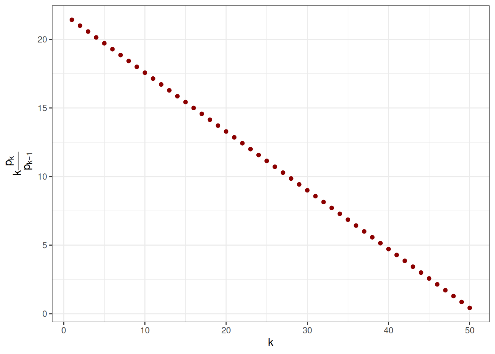
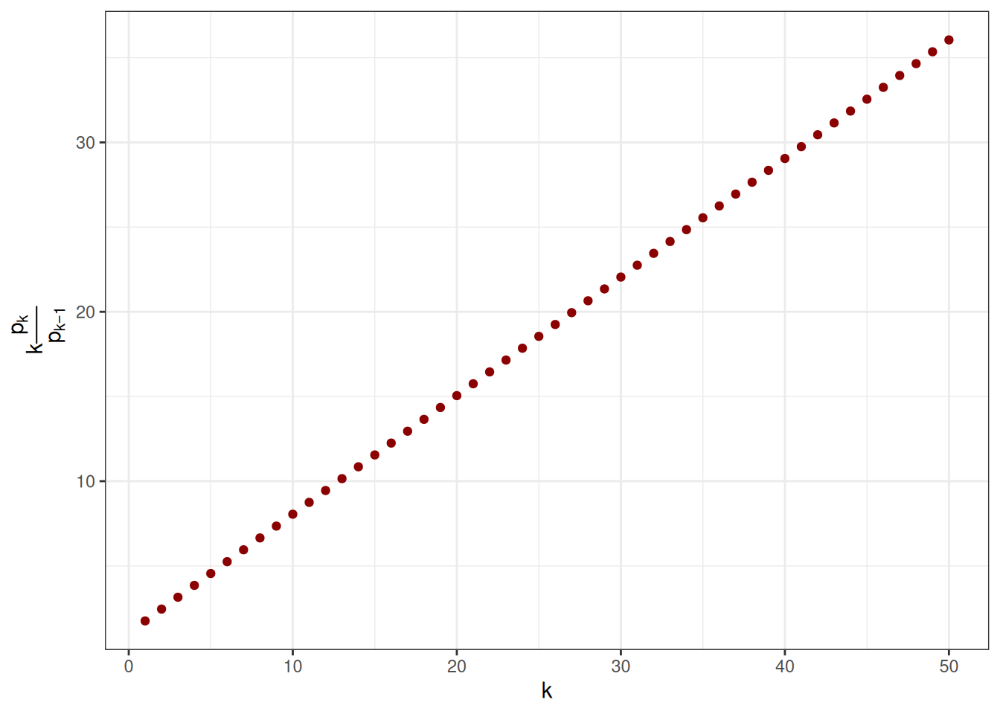

Una variable aleatoria \(N\) que toma valores en \(\N\) se dice que sigue una distribución o ley de binomial \(N \rightsquigarrow Bin( n, p )\), con parámetros \(n \in \N\) y \(p \in [0, 1]\), si: \[
P( N = k ) = \binom{n}{k} p^k ( 1 - p )^{n-k}, \qquad
\forall k \in \{0,\ldots, n\}
\] esta distribución discreta se caracteriza por presentar el valor \(k \frac{p_k}{p_{k-1}}\) decreciente conforme cambia \(k \in \N\)
Code
set.seed(94312)n <-50p <-0.3k <-2m <-100N <-rbinom( n = m, size = n, prob = p ) # simular una muestra de tamaño mpk <-dbinom( x = k, size = n, prob = p ) # cálculo de probabilidad P( N = k )Pk <-pbinom( q = k, size = n, prob = p ) # cálculo de probabilidad P( N <= k )p <-dbinom( x =0:n, size = n, prob = p )v <-1:n * p[ 2:(n +1) ] / p[ 1:n ]
Code
plt <-ggplot() +geom_point( aes( x =1:n, y = v ), colour ='darkred' ) +xlab( TeX( "$k$" ) ) +ylab( TeX( "$k \\frac{p_k}{p_{k-1}}$" ) ) +theme_bw()plot( plt )

6.1.2 Distribución de Poisson
Una variable aleatoria \(N\) que toma valores en \(\N\) se dice que sigue una distribución o ley de Poisson \(N \rightsquigarrow Pois( n, p )\), con parámetro \(\lambda \in \R\), si: \[
P( N = k ) = \exp\left( -\lambda \right) \frac{\lambda^k}{k!}, \qquad
\forall k \in \N
\] esta distribución discreta se caracteriza por presentar el valor \(k \frac{p_k}{p_{k-1}}\) constante conforme cambia \(k \in \N\)
Code
lambda <-2k <-2m <-100N <-rpois( n = m, lambda = lambda ) # simular una muestra de tamaño mpk <-dpois( x = k, lambda = lambda ) # cálculo de probabilidad P( N = k )Pk <-ppois( q = k, lambda = lambda ) # cálculo de probabilidad P( N <= k )n <-50p <-dpois( x =0:n, lambda = lambda )v <-1:n * p[ 2:(n +1) ] / p[ 1:n ]
Code
plt <-ggplot() +geom_point( aes( x =1:n, y = v ), colour ='darkred' ) +xlab( TeX( "$k$" ) ) +ylab( TeX( "$k \\frac{p_k}{p_{k-1}}$" ) ) +theme_bw()plot( plt )
6.1.3 Distribución binomial negativa
Una variable aleatoria \(N\) que toma valores en \(\N\) se dice que sigue una distribución o ley de binomial negativa \(N \rightsquigarrow NBin( \alpha, p )\), con parámetro \(\alpha > 0\) y \(p \in (0,1)\), si: \[
P( N = k ) = \binom{\alpha + k - 1}{k} p^\alpha ( 1 - p )^k
= \frac{\Gamma( \alpha + k )}{\Gamma(k+1) \Gamma(\alpha)}p^\alpha ( 1 - p )^k, \qquad
\forall k \in \N
\] donde \(\Gamma( \alpha ) = \int\limits_0^{+\infty} x^{\alpha - 1} \exp(-x)\ dx\), \(\forall \alpha \geq 0\).
Esta distribución discreta se caracteriza por presentar el valor \(k \frac{p_k}{p_{k-1}}\) creciente conforme cambia \(k \in \N\)
Code
alpha <-2.5p <-0.3k <-2m <-100N <-rnbinom( n = m, size = alpha, prob = p ) # simular una muestra de tamaño mpk <-dnbinom( x = k, size = alpha, prob = p ) # cálculo de probabilidad P( N = k )Pk <-pnbinom( q = k, size = alpha, prob = p ) # cálculo de probabilidad P( N <= k )n <-50p <-dnbinom( x =0:n, size = alpha, prob = p )v <-1:n * p[ 2:(n +1) ] / p[ 1:n ]
Code
plt <-ggplot() +geom_point( aes( x =1:n, y = v ), colour ='darkred' ) +xlab( TeX( "$k$" ) ) +ylab( TeX( "$k \\frac{p_k}{p_{k-1}}$" ) ) +theme_bw()plot( plt )

Una variable aleatoria \(N\) que toma valores en \(\N\) se dice que sigue una distribución o ley geométrica \(N \rightsquigarrow Geo( p )\), con parámetro \(p \in (0,1]\), si: \[
P( N = k ) = ( 1 - p )^k p, \qquad
\forall k \in \N
\]
Code
p <-0.3k <-2m <-100N <-rgeom( n = m, prob = p ) # simular una muestra de tamaño mpk <-dgeom( x = k, prob = p ) # cálculo de probabilidad P( N = k )Pk <-pgeom( q = k, prob = p ) # cálculo de probabilidad P( N <= k )
Es fácil darse cuenta que la distribución geométrica \(Geo( p )\) es una binomial negativa \(BN( 1, p )\), con \(\alpha = 1\).
Asociado a estas distribuciones discretas existe un resultado de caracterización, el cual permite seleccionar la distribución de conteo.
6.2 Familia de Panjer
El criterio anterior para identificar el tipo de distribución, mediante la observación del comportamiento de la variable \(k \frac{p_k}{p_{k-1}}\), se formaliza precisamente en la definición de la familia de Panjer.
Una variable aleatoria discreta \(N\), que toma valores enteros positivos \(N \in \N\), se dice que pertenece a la familia de Panjer, si sus probabilidades \(p_k = P( N = k )\) para cada \(k \in \N\), satisfacen la siguiente relación de recurrencia. \[
p_k = \left( a + \frac{b}{k} \right)p_{k-1},\qquad \forall k \in \N \setminus \{0\}
\]
Además tenemos la siguiente proposición que caracteriza a la distribución de las variables aleatorias en la familia de Panjer.
Las únicas leyes de probabilidad que satisfacen la relación de recurrencia anterior son:
La ley de Poisson, la cual se obtiene para \(a = 0\) y \(b > 0\)\[
k \frac{p_k}{p_{k-1}} = b > 0,\quad \text{constante en $k$}
\]
La ley binomial negativa, la cual se obtiene para \(0 < a < 1\) y \(a + b > 0\)\[
k \frac{p_k}{p_{k-1}} = a k + b > 0,\quad \text{creciente en $k$}
\]
La ley binomial, la cual se obtenida para \(a < 0\) y \(b = -a(m + 1)\), para cierto \(m\) entero y positivo. \[
k \frac{p_k}{p_{k-1}} = a( k - m - 1 ) < 0, \quad \text{decreciente en $k$}
\]
Para una demostración detallada de la proposición anterior se puede consultar [3] o en https://nonlifemaths.github.io/.
plt <-ggplot() +geom_point( data = conteo, aes( x = N, y = jn ), colour ='purple' ) +xlab( TeX( "$k$" ) ) +ylab( TeX( "$k \\frac{p_k}{p_{k-1}}$" ) ) +theme_bw()plot( plt )
Además, una forma sencilla de estimar si una variable sigue una distribución de las tres antes descritas es estudiando su coeficiente de variación \(\VC( N ) = \frac{\V[N]}{\E[N]}\).
Si \(N\) sigue una ley de Poisson \(Pois(\lambda)\), entonces: \[
\VC( N ) = \frac{\V[N]}{\E[N]} = \frac{\lambda}{\lambda} = 1
\]
Si \(N\) sigue una ley de binomial negativa \(NBinom( \alpha, p )\), entonces: \[
\VC( N ) = \frac{\V[N]}{\E[N]} = \frac{\alpha\frac{1-p}{p^2}}{\alpha\frac{1-p}{p}} = \frac{1}{p} > 1
\]
Si \(N\) sigue una ley de binomial \(Binom( n, p )\), entonces: \[
\VC( N ) = \frac{\V[N]}{\E[N]} = \frac{np(1-p)}{np} = 1 - p < 1
\]
6.3 Distribuciones continuas
6.3.1 Distribución uniforme
Una variable aleatoria \(X\) a valores reales, sigue una distribución uniforme \(X \rightsquigarrow Unif( a, b )\) de parámetros \(a, b \in \R\), si su función de distribución acumulada es de la siguiente forma: \[
F_X( x ) = \frac{x-a}{b-a} \mathbf{1}_{[a,b)}( x ) + \mathbf{1}_{[b,+\infty)}( x )
\] sin mucho esfuerzo se puede verificar que su densidad de probabilidad está dada por la función \[
f_X( x ) = \frac{1}{b-a}\mathbf{1}_{[a,b]}( x )
\]\[
M_X( t ) = \frac{\exp(bt)-\exp(at)}{t(b-a)}
\]\[
\E[X] = \frac{a + b}{2},\qquad \V[X] = \frac{(b - a)^2}{12}
\]
Code
a <-1b <-2x <-1.5m <-100X <-runif( n = m, min = a, max = b ) # simular una muestra de tamaño mfx <-dunif( x = x, min = a, max = b ) # cálculo de la densidad f(x)Fk <-punif( q = x, min = a, max = b ) # cálculo de probabilidad F(x)
6.3.2 Distribución exponencial
Una variable aleatoria \(X\) a valores reales, sigue una distribución exponencial \(X \rightsquigarrow Exp( \lambda )\) de parámetros \(\lambda > 0\), si su función de distribución acumulada es de la siguiente forma: \[
F_X( x ) = \mathbf{1}_{(0,+\infty)}( x ) \left( 1 - \exp\left( -\lambda x \right) \right)
\] sin mucho esfuerzo se puede verificar que su densidad de probabilidad está dada por la función \[
f_X( x ) = \mathbf{1}_{(0,+\infty)}( x ) \lambda \exp\left( -\lambda x \right)
\]\[
M_X( t ) = \frac{\lambda}{\lambda - t}
\]\[
\E[X] = \frac{1}{\lambda},\qquad \V[X] = \frac{1}{\lambda^2}
\]
Code
lambda <-2x <-1.5m <-100X <-rexp( n = m, rate = lambda ) # simular una muestra de tamaño mfx <-dexp( x = x, rate = lambda ) # cálculo de la densidad f(x)Fk <-pexp( q = x, rate = lambda ) # cálculo de probabilidad F(x)
6.3.3 Distribución gamma
Una variable aleatoria \(X\) a valores reales, sigue una distribución gamma \(X \rightsquigarrow Gamma( \alpha, \beta )\) de parámetros \(\alpha > 0\), \(\beta > 0\), si su función de distribución acumulada es de la siguiente forma: \[
F_X( x ) = \frac{\beta^\alpha}{\Gamma( \alpha )} \int\limits_{0}^{x} u^{\alpha-1} \exp(-\beta u)\ du
\] si en caso \(\alpha\) un entero positivo, i.e. \(\alpha \in \N^*\), se puede calcular \(F_X( x )\) con la siguiente serie \[
F_X( x ) = 1 - \exp( -\lambda x ) \sum\limits_{n=0}^{\alpha-1} \frac{(\lambda x)^n}{n!}
= \exp( -\lambda x ) \sum\limits_{n=\alpha}^{+\infty} \frac{(\lambda x)^n}{n!}
\]
por su parte, la densidad de probabilidad automáticamente está dada por la función: \[
f_X( x ) = \mathbf{1}_{[0,+\infty}( x ) \frac{\beta^\alpha}{\Gamma( \alpha )} x^{\alpha-1} \exp(-\beta x)
\]\[
M_X( t ) = \left( \frac{\beta}{\beta - t} \right)^\alpha,\qquad \text{si}\ t < \beta
\]\[
\E[X] = \frac{\alpha}{\beta},\qquad
\V[X] = \frac{\alpha}{\beta^2}
\]
Code
alpha <-2beta <-1x <-3m <-100X <-rgamma( n = m, shape = alpha, scale = beta ) # simular una muestra de tamaño mfx <-dgamma( x = x, shape = alpha, scale = beta ) # cálculo de la densidad f(x)Fk <-pgamma( q = x, shape = alpha, scale = beta ) # cálculo de probabilidad F(x)
6.3.4 Distribución normal
Una variable aleatoria \(X\) a valores reales, sigue una distribución normal \(X \rightsquigarrow N( \mu, \sigma )\) de parámetros \(\mu \in \R\), \(\sigma > 0\), si su función de distribución acumulada es de la siguiente forma: \[
F_X( x ) = \frac{1}{\sqrt{2\pi} \sigma} \int\limits_{-\infty}^x \exp\left( -\frac{(y - \mu)^2}{\sigma^2} \right)\ dy
\] la densidad de probabilidad automáticamente está dada por la función: \[
f_X( x ) = \frac{1}{\sqrt{2\pi}} \exp\left( -\frac{(x - \mu)^2}{\sigma^2} \right)
\]\[
M_X( t ) = \exp\left( t \mu + \frac{1}{2} t^2 \sigma^2 \right)
\]\[
\E[X] = \mu,\qquad \V[X] = \sigma^2
\]
Code
mu <-2sigma <-1x <-3m <-100X <-rnorm( n = m, mean = mu, sd = sigma ) # simular una muestra de tamaño mfx <-dnorm( x = x, mean = mu, sd = sigma ) # cálculo de la densidad f(x)Fk <-pnorm( q = x, mean = mu, sd = sigma ) # cálculo de probabilidad F(x)
6.3.5 Distribución log-normal
Una variable aleatoria \(X\) a valores reales, sigue una distribución log-normal \(X \rightsquigarrow LN( \mu, \sigma )\) de parámetros \(\mu > 0\), \(\sigma > 0\), si su función de distribución acumulada es de la siguiente forma: \[
F_X( x ) = \frac{1}{\sqrt{2\pi} \sigma} \int\limits_{0}^{x} \frac{1}{y} \exp\left( -\frac{(\ln(y) - \mu)^2}{\sigma^2} \right)\ dy
\] la densidad de probabilidad automáticamente está dada por la función: \[
f_X( x ) = \frac{1}{x\sqrt{2\pi} \sigma} \exp\left( -\frac{(\ln(x) - \mu)^2}{\sigma^2} \right)
\] No hay forma analítica para \(M_X\)\[
\E[X] = \exp\left( \mu + \frac{1}{2}\sigma^2 \right),\qquad
\V[X] = \exp\left( 2 \mu + \sigma^2 \right) \left( \exp( \sigma^2 ) - 1 \right)
\]
Code
mu <-2sigma <-1x <-3m <-100X <-rlnorm( n = m, meanlog = mu, sdlog = sigma ) # simular una muestra de tamaño mfx <-dlnorm( x = x, meanlog = mu, sdlog = sigma ) # cálculo de la densidad f(x)Fk <-plnorm( q = x, meanlog = mu, sdlog = sigma ) # cálculo de probabilidad F(x)
En pocas, una variable aleatoria \(X \rightsquigarrow LN( \mu, \sigma )\) sigue una distribución log-normal si y solamente si la variable aleatoria dada por su logaritmo \(\ln( X ) \rightsquigarrow N( \mu, \sigma )\) sigue una distribución normal.
6.3.6 Distribución de beta
Una variable aleatoria \(X \in [0,1]\) a valores reales, sigue una distribución beta \(X \rightsquigarrow Beta( \alpha, \beta )\) de parámetros \(\alpha > 0\), \(\beta > 0\), si su función de distribución acumulada es de la siguiente forma: \[
F_X( x ) = \frac{1}{B(\alpha,\beta)} \int\limits_{0}^x t^{\alpha-1} ( 1 - t )^{\beta - 1}\ dt
\] la densidad de probabilidad automáticamente está dada por la función: \[
f_X( x ) = \frac{x^{\alpha-1} ( 1 - x )^{\beta - 1}}{B(\alpha,\beta)}
\]\[
M_X( t ) = 1 + \sum\limits_{k=1}^{+\infty} \left( \prod\limits_{l=0}^{k-1} \frac{\alpha + l}{\alpha + \beta + l} \right) \frac{t^k}{k!}
\]\[
\E[X] = \frac{\alpha}{\alpha + \beta},\qquad
\V[X] = \frac{\alpha\beta}{(\alpha + \beta)^2(\alpha + \beta + 1)}
\]
Code
alpha <-1beta <-2x <-0.5m <-100X <-rbeta( n = m, shape1 = alpha, shape2 = beta ) # simular una muestra de tamaño mfx <-dbeta( x = x, shape1 = alpha, shape2 = beta ) # cálculo de la densidad f(x)Fk <-pbeta( q = x, shape1 = alpha, shape2 = beta ) # cálculo de probabilidad F(x)
6.3.7 Distribución de Pareto generalizada
Una variable aleatoria \(X\) a valores reales, sigue una distribución de Pareto generalizada \(X \rightsquigarrow GPD( \mu, \sigma, \xi )\) de parámetros \(\mu \in \R, \sigma > 0, \xi \in \R\), si su función de distribución acumulada es de la siguiente forma: \[
F_X( x )
= \left \{
\begin{array}{ll}
1 - \left( 1 + \xi \frac{x-\mu}{\sigma} \right)^{-\frac{1}{\xi}} & \text{si}\ \xi \neq 0 \\
1 - \exp\left( -\frac{x-\mu}{\sigma} \right) & \text{si}\ \xi = 0
\end{array}
\right.
\] y su densidad de probabilidad está dada por la función \[
f_X( x )
= \left \{
\begin{array}{ll}
\frac{1}{\sigma} \left( 1 + \xi \frac{x-\mu}{\sigma} \right)^{-1-\frac{1}{\xi}} & \text{si}\ \xi \neq 0 \\
\frac{1}{\sigma} \exp\left( -\frac{x-\mu}{\sigma} \right) & \text{si}\ \xi = 0
\end{array}
\right.
\]\[
M_X( t ) = \exp(\theta \mu) \sum\limits_{j=0}^{+\infty} \frac{\theta^j \sigma^j}
{\prod\limits_{k=0}^j ( 1 - k \xi )}
\]
Code
xi <-1mu <-2sigma <-1x <-3m <-100X <-rgpd( n = m, xi = xi, mu = mu, beta = sigma ) # simular una muestra de tamaño mfx <-dgpd( x = x, xi = xi, mu = mu, beta = sigma ) # cálculo de la densidad f(x)Fk <-pgpd( q = x, xi = xi, mu = mu, beta = sigma ) # cálculo de probabilidad F(x)
6.3.8 Distribución de valores extremos generalizada
Una variable aleatoria \(X\) a valores reales, sigue una distribución generalizada de valores extremos \(X \rightsquigarrow GEV( \mu, \sigma, \xi )\) de parámetros \(\mu \in \R, \sigma > 0, \xi \in \R\), si su función de distribución acumulada es de la siguiente forma: \[
F_X( x )
= \left\{
\begin{array}{ll}
\exp\left( -\exp\left( -\frac{x-\mu}{\sigma} \right) \right)
& \text{si}\ \xi = 0 \\
\exp\left( -\left( 1 + \xi \frac{x-\mu}{\sigma} \right)^{-\frac{1}{\xi}} \right)
& \text{si}\ \xi \neq 0, 1 + \xi\frac{x - \mu}{\sigma} > 0
\end{array}
\right.
\] además se puede verificar que su densidad de probabilidad está dada por la función \[
f_X( x )
= \left\{
\begin{array}{ll}
\exp\left(-\frac{x-\mu}{\sigma}\right)
\exp\left(-\exp\left(-\frac{x-\mu}{\sigma}\right)\right)
& \text{si}\ \xi = 0 \\
\left( 1 + \xi \frac{x - \mu}{\sigma}\right)^{-1-\frac{1}{\xi}}
\exp\left( -\left( 1 + \xi \frac{x-\mu}{\sigma} \right)^{-\frac{1}{\xi}} \right)
& \text{si}\ \xi \neq 0, 1 + \xi\frac{x - \mu}{\sigma} > 0
\end{array}
\right.
\]
Code
xi <--1mu <-2sigma <-1x <-3m <-100X <-rgev( n = m, xi = xi, mu = mu, beta = sigma ) # simular una muestra de tamaño mfx <-dgev( x = x, xi = xi, mu = mu, beta = sigma ) # cálculo de la densidad f(x)Fk <-pgev( q = x, xi = xi, mu = mu, beta = sigma ) # cálculo de probabilidad F(x)
6.3.9 Distribución t de Student
Una variable aleatoria \(X\) a valores reales, sigue una distribución t de Student \(X \rightsquigarrow t( \nu )\) de parámetros \(\nu > 0\), si su función de distribución acumulada es de la siguiente forma: \[
F_X( x )
= \frac{1}{2} + \frac{x}{\sqrt{\pi \nu}}
\frac{\Gamma\left( \frac{\nu + 1}{2} \right)}{\Gamma\left( \frac{\nu}{2} \right)}
F\left( \frac{1}{2}, \frac{\nu+1}{2}, \frac{3}{2}, -\frac{x^2}{\nu} \right)
\] donde \(F\) es la función hipergeométrica. \[
F( a, b, c, z ) = \sum\limits_{n=0}^{+\infty} \frac{(a)_n (b)_n}{(c)_n} \frac{z^n}{n!}
\] con \[
(a)_n
= \left\{
\begin{array}{ll}
1 & n = 0 \\
a( a + 1 ) \cdots (a + n - 1) & n > 0
\end{array}
\right.
\] Además, se puede verificar que su densidad de probabilidad está dada por la función \[
f_X( x )
= \frac{x}{\sqrt{\pi \nu}}
\frac{\Gamma\left(\frac{\nu+1}{2}\right)}{\Gamma\left( \frac{\nu}{2} \right)}
\left( 1 + \frac{x^2}{\nu} \right)^{-\frac{\nu+1}{2}}
\] La función generadora de momentos \(M_X( t )\) no está definida \[
\E[X]
= \left\{
\begin{array}{ll}
0 & \text{si}\ \nu > 0 \\
\text{no definida} & \text{si}\ \nu \leq 0
\end{array}
\right.
\]
nu <-3x <-4m <-100X <-rt( n = m, df = nu ) # simular una muestra de tamaño mfx <-dt( x = x, df = nu ) # cálculo de la densidad f(x)Fk <-pt( q = x, df = nu ) # cálculo de probabilidad F(x)
6.3.10 Distribución gamma transformada
Una variable aleatoria \(X\) a valores reales, sigue una distribución gamma transformada \(X \rightsquigarrow GT( \alpha, \tau, \theta )\) de parámetros \(\alpha > 0, \tau > 0, \theta > 0\), si su función de distribución acumulada es de la siguiente forma: \[
F_X( x ) = \frac{\tau}{\Gamma( \alpha )}
\int\limits_{0}^x
\frac{1}{u} \left( \frac{u}{\theta} \right)^{\alpha} \exp\left(-\left( \frac{u}{\theta} \right)^{\tau}\right)\ du
\]
además se puede verificar que su densidad de probabilidad está dada por la función: \[
f_X( x )
=
\left\{
\begin{array}{ll}
0 & \text{si}\ x \leq 0 \\
\frac{\tau}{x \Gamma( \alpha )} \left( \frac{x}{\theta} \right)^{\alpha} \exp\left(-\left( \frac{x}{\theta} \right)^{\tau}\right) & \text{si}\ x > 0
\end{array}
\right.
\]\[
\begin{split}
\E[X^k]
& = \frac{\theta^k \Gamma\left( \alpha + \frac{k}{\tau}\right)}{\Gamma( \alpha )},
\quad \text{si}\ k > -\alpha \tau \\
\E[X]
& = \frac{\theta \Gamma\left( \alpha + \frac{1}{\tau}\right)}{\Gamma( \alpha )},
\quad \text{si}\ 1 > -\alpha \tau \\
\V[X]
& = \frac{\theta^2 \Gamma\left( \alpha + \frac{2}{\tau}\right)}{\Gamma( \alpha )}
- \frac{\theta^2 \Gamma\left( \alpha + \frac{1}{\tau}\right)^2}{\Gamma( \alpha )^2}
\end{split}
\]
Code
alpha <-1tau <-1theta <-1x <-3m <-100X <-rtrgamma( n = m, shape1 = alpha, shape2 = tau, scale = theta ) # simular una muestra de tamaño mfx <-dtrgamma( x = x, shape1 = alpha, shape2 = tau, scale = theta ) # cálculo de la densidad f(x)Fk <-ptrgamma( q = x, shape1 = alpha, shape2 = tau, scale = theta ) # cálculo de probabilidad F(x)
En la familia gamma se incluyen las siguientes distribuciones:
La distribución inversa gamma transformada, es decir es una familia estable por inversión
La distribución gamma para \(\alpha = n/2\) y \(\theta = 2\)
La distribución inversa gamma
La distribución de Weibull
La distribución inversa de Weibull
La distribución exponencial
La distribución inversa exponencial
6.3.11 Distribución beta transformada
Una variable aleatoria \(X\) a valores reales, sigue una distribución beta transformada \(X \rightsquigarrow BT( \alpha, \gamma, \tau, \theta )\) de parámetros \(\alpha > 0, \gamma > 0, \tau > 0, \theta > 0\), si su función de distribución acumulada es de la siguiente forma: \[
F_X( x ) = \frac{\Gamma(\alpha + \tau)}{\Gamma( \alpha ) \Gamma( \tau )}
\int\limits_0^x
\frac{\gamma \left( \frac{u}{\theta} \right)^{\gamma \tau}}{u\left( 1 + \left( \frac{u}{\theta} \right)^{\gamma}\right)^{\alpha + \tau}}\ du
\]
además se puede verificar que su densidad de probabilidad está dada por la función: \[
f_X( x )
= \mathbf{1}_{[0,+\infty)}( x )
\frac{\Gamma(\alpha + \tau)}{\Gamma( \alpha ) \Gamma( \tau )}
\frac{ \gamma \left( \frac{x}{\theta} \right)^{\gamma \tau}}{x\left( 1 + \left( \frac{x}{\theta} \right)^{\gamma}\right)^{\alpha + \tau}}
\]
alpha <-1gamma <-1tau <-1theta <-1x <-3m <-100X <-rtrbeta( n = m, shape1 = alpha, shape2 = gamma, shape3 = tau, scale = theta ) # simular una muestra de tamaño mfx <-dtrbeta( x = x, shape1 = alpha, shape2 = gamma, shape3 = tau, scale = theta ) # cálculo de la densidad f(x)Fk <-ptrbeta( q = x, shape1 = alpha, shape2 = gamma, shape3 = tau, scale = theta ) # cálculo de probabilidad F(x)
Dentro de la familia beta transformada se cuenta algunas distribuciones de probabilidad:
La distribución de Burr para \(\tau = 1\)
La distribución de log-logística para \(\alpha = \tau = 1\)
La distribución de paralogística para \(\alpha = \gamma, \tau = 1\)
La distribución de generalizada de Pareto para \(\gamma = 1\)
La distribución de Pareto para \(\gamma = \tau = 1\)
La distribución de inversa de Burr para \(\alpha = 1\)
La distribución de inversa de Pareto para \(\alpha = \gamma = 1\)
La distribución de inversa paralogística para \(\alpha = 1, \gamma = \tau\)
La distribución transformada gamma es un caso límite de la distribución transformada beta, cuando \(\theta \rightarrow +\infty, \alpha \rightarrow +\infty\) y \(\theta \alpha^{-\frac{1}{\gamma}} \rightarrow \xi\)
6.4 Estimación
En la práctica se observa la realización de una variable aleatoria \(X\), es decir se tiene una muestra de la misma \(X_1, \ldots, X_n\). Pero, no se dispone de la distribución \(F\) o de la densidad \(f\) que la describe. Como ya hemos mencionado, conociendo la distribución se puede inferir algunas propiedades sobre la variable. De ahí surge la necesidad de buscar la mejor distribución \(F\) posible a partir de la muestra [2], [5], [1], [4].
La estimación usualmente consiste en tratar de determinar la probabilidad \(P_X\) asociada a \(X\), o en su defecto su función de distribución acumulada. Bajo la consideración, usualmente, de alguna información adicional, se considera que para la medida de de probabilidad \(P_X\) que caracteriza a la variable aleatoria \(X\) está dentro de una familia probabilidades que dependen de un parámetro \(\theta\) el cual pertenece a un conjunto \(\Theta\), precisamente parametriza a la familia, es decir, para cada \(\theta \in \Theta\), \(P_{\theta}\) es una medida de probabilidad y para algún \(\theta \in \Theta, P_X = P_{\theta}\).
Ya en la práctica se tiene una muestra, por lo regular finita, \(X_1, \ldots, X_n\) de la variable aleatoria \(X\) que se desea comprender. Es a partir de la muestra que se intenta crear un estimador \(\tau\) el cual sea precisamente el “mejor” bajo un cierto criterio que aproxime a la probabilidad \(P_X\), en términos algo más matemáticos \(P_X \approx P_{\tau}\). Por lo regular, se propone un estimador \(\tau\) como función de la muestra y su tamaño \(\tau_n( X_1, \ldots, X_n ) = \tau( n, X_1, \ldots, X_n )\), en muchos casos se considera construir una función medible, que precisamente genere eventos observables. Es de notar que el estimador \(\tau_n\) al depender de una muestra, la cual está constituida por variables aleatorias, como función de variables aleatorias se convierte también en una variable aleatoria al ser evaluada en estas.
Hay algunas propiedades deseables para una familia de estimadores \(\mathcal{E}\), estas son:
Consistencia
Insesgamiento
Eficiencia
Suficiencia
Para, cada adjuntamos sus respectivas definiciones
Consideramos una variable aleatoria \(X\), cuya medida de probabilidad asociada \(P_X\) pertenece a una familia de distribuciones de probabilidad \(\{P_\theta\}_{\theta \in \Theta}\), esto quiere decir que \(P_X\) está determinada por algún \(\theta \in \Theta\), i.e. \(P_X = P_{\theta}\). Entonces, la familia de estimadores \(\mathcal{E} = \{ \tau_n \}_n\) es consistente para la familia de probabilidades \(\{P_\theta\}_{\theta \in \Theta}\) si para cualquier \(n \in \N\) y muestra \(X_1, \ldots, X_n\) de \(X\) el estimador \(\tau_n( X_1,\ldots,X_n)\) converge en probabilidad a \(\theta\). Para todo \(\varepsilon > 0\)\[
\underset{n \rightarrow +\infty}{\lim} P_{\theta}\left( \left| \tau_n( X_1,\ldots,X_n) - \theta \right| > \varepsilon\right) = 0
\] también se dice que la familia de estimadores es convergente.
Decimos que converge fuertemente si la convergencia de la familia de estimadores \(\mathcal{E} = \{ \tau_n \}_n\) al parámetro \(\theta\) se da casi seguramente o en casi todas partes. Esto en término de límites implica que: \[
P_{\theta}\left( \underset{n \rightarrow +\infty}{\lim}
\tau_n\left( X_1, \ldots, X_n \right) = \theta \right) = 1
\] En otras palabras, la probabilidad de que el límite del estimador \(\tau_n( X_1, \ldots, X_n )\) sea igual a \(\theta\) es \(1\), salvo un conjunto de medida nula para \(P_{\theta}\). De ahí resulta la terminología de convergencia casi segura o convergencia en casi todas partes.
Bajo el mismo contexto de la definición anterior. Decimos que el estimador \(\tau_n\) es insesgado si precisamente su esperanza es igual al parámetro a estimar \(\theta \in \Theta\). \[
\E\left[ \tau_n( X_1,\ldots,X_n) \right] = \theta
\] La familia de estimadores \(\mathcal{E} = \{ \tau_n \}_n\) será insesgada si para cada \(n\) se satisface lo anterior.
El siguiente teorema es de importancia para caracterizar una familia de estimadores consistentes.
Una familia de estimadores \(\{ \tau_n \}_n\) para la cual se cumplen los siguientes límites
Entonces, la familia \(\{ \tau_n \}_n\) es consistente como estimadores de \(\theta\).
De igual forma en el contexto anterior. En una familia de estimadores consistentes para estimar un parámetro, si entre estos estimadores existe uno para el cual su varianza sea mínima, entonces si existe tal estimador se dice que este es el estimador más eficiente. Sin \(\mathcal{E}\) es la familia de estimadores y \(\xi\) es el estimador más eficiente, entonces para cualquier otro estimador \(\tau \in \mathcal{E}\), se tiene la siguiente desigualdad \[
\V\left[ \xi \right] \leq \V\left[ \tau \right]
\] la eficiencia\(E\) de los estimadores en la familia \(\mathcal{E}\) está dada por \[
0 \leq E( \tau ) = \frac{\V\left[ \xi \right]}{\V\left[ \tau \right]} \leq 1
\] Si además el estimador más eficiente \(\xi\) es insesgado se dirá que este es un estimador de varianza mínima insesgado, o de forma corta MVUE por el término en inglés (minimum variance unbiased estimator).
Si en una familia de estimadores \(\mathcal{E}\) tenemos dos estimadores MVUE para el mismo parámetro \(\theta \in \Theta\), entonces estos dos estimadores son iguales en casi todas partes o lo que es lo mismo solo son diferentes en un conjunto de medida nula.
Dada una muestra \(X_1, \ldots, X_n\) de la variable aleatoria \(X\). Un estimador \(\tau\left( X_1, \ldots, X_n \right)\) se dice un estimador suficiente para el parámetro \(\theta \in \Theta\), si la distribución condicionada de la muestra \(X_1, \ldots X_n\) dado el estimador \(\tau\) es independiente del parámetro \(\theta\).
El resultado a continuación es una caracterización del criterio de suficiencia, para una demostración se puede consultar [7], [4].
Un estimador \(\tau\) es suficiente para el parámetro \(\theta\) si y solo si la densidad conjunta de la muestra \(X_1, \ldots, X_n\) puede ser expresada en la forma. \[
f\left( x_1, \ldots, x_n \right)
= g\left( \theta, \tau\left( x_1, \ldots, x_n \right) \right) h\left( x_1, \ldots, x_n \right)
\]
Data un estimador \(\tau\) que depende de una muestra aleatoria \(X_1, \ldots, X_n\) y una familia de medidas de probabilidad \(\{ P_\theta \}_{\theta \in \Theta}\), para cada \(\theta \in \Theta\), se puede construir la medida \(P_{\tau,\theta}\) asociada a la variable aleatoria \(\tau(X_1, \ldots,X_n)\) y al parámetro \(\theta\) que determina la medida \(P_\theta\). Para cualquier evento \(A \in \F\). \[
P_{\tau,\theta}( A ) = P_\theta\left( \tau\left(X_1, \ldots,X_n\right) \in A \right)
\]
Así, la familia de medidas de probabilidad \(\{ P_{\tau,\theta} \}_{\theta \in \Theta}\) se dice completa si se satisface la siguiente implicación. Si una función \(h : \R \longrightarrow \R\), tiene esperanza nula para cualquier esperanza tomada bajo la medida \(P_{\tau, \theta}\), entonces la función \(h\) es nula en casi todas partes para toda medida \(P_\theta\). De forma más compacta. \[
\forall P_{\tau,\theta}, \E_{P_{\tau,\theta}}\left[ h\left( \tau\left( X_1,\ldots, X_n \right) \right) \right] = 0
\Longrightarrow
\forall P_\theta, P_\theta\left( h\left( \tau\left( X_1,\ldots, X_n \right) \right) = 0 \right) = 1
\] Por extensión si sucede esta implicación, se dice que \(\tau\) es un estimador completo respecto de la familia \(\{ P_\theta \}_{\theta \in \Theta}\).
Para ello se ha formulado diferentes aproximaciones, entre las cuales citamos las siguientes:
Método de sustitución,
Método de los momentos,
Método de la distancia mínima,
3.1 Método de mínimos cuadrados,
3.2 Método de mínimo Chi-cuadrado,
3.3 Método de varianza mínima,
3.4 Método de minimización de la divergencia de Kullback–Leibler (máxima verosimilitud).
Método de máxima verosimilitud,
Método de Stein.
6.4.1 Método de sustitución
Entonces, se parte de suponer que existe funcional \(G\) actuando sobre el conjunto de medidas de probabilidad \(\mathcal{P}\) que contiene al conjunto \(P( \Theta ) = \{ P_{\theta} \mid \theta \in \Theta\} \subset \mathcal{P}\) y que toma valores en \(\Theta\), i.e. \(G: \mathcal{P} \longrightarrow \Theta\). De tal forma que \(P_{\theta}\) es invariante, es decir: \[
G( P_{\theta} ) = \theta,\quad \forall \theta \in \Theta
\]
Así se construye un estimador por el método de sustitución si a partir de la medida de probabilidad empírica \(P_n\) construida con una muestra \(X_1, \ldots, X_n\) de la variable aleatoria \(X\), se toma como parámetro el dado por: \[
\widehat{\theta} = G\left( P_n \right)
\]
En otras palabras se sustituye el parámetro \(\theta\) por \(\widehat{\theta}\). Esto implica que se aproxima la medida \(P_X\) que caracteriza a \(X\), con la aproximación \(P_X \approx P_{\widehat{\theta}}\).
Es de notar que a priori no se hace establece ninguna medida de la calidad de la aproximación, para ello hay que adjuntar algunos otros criterios que caracterizan un buen tipo de estimador.
En otras ocasiones a partir de la muestra se define un estimador del parámetro \(\theta \in \Theta\) a partir de una familia de funciones medibles que dependen directamente de la muestra \(X_1, \ldots, X_n\) y su tamaño \(n\), i.e. una función \(\theta_n( X_1, \ldots, X_n )\). Se puede considerar el caso anterior como un caso en particular de este tipo de funciones, ya que se puede definir \(\theta_n( X_1, \ldots, X_n ) = G( P_n )\), pero hay que tener cuidado que \(G\) es un funcional y como tal puede resultar una función que no es medible.
6.4.2 Método de momentos
Un estimador de momento se construye a partir de una relación función entre la media de una función medible \(g\) y el parámetro \(\theta \in \Theta\) que caracteriza a la distribución o medida de probabilidad de la variable aleatoria \(X\). Es decir, existen funciones \(g\) y \(m\) a valores reales de tal forma que \[
m( \theta )
= \E_{P_X} \left[ g( X ) \right]
= \int\limits_{\R} g( x ) dP_X( x )
= \int\limits_{\R} g( x ) dP_{\theta}( x )
\]
Si de alguna forma se puede invertir \(m\), de tal forma que se pueda determinar \(\theta\), en tal caso se pude utilizar un estimador por momentos a partir de una muestra de la variable aleatoria \(X_1, \ldots, X_n\)\[
\widehat{\theta}
= \theta_n\left( X_1, \ldots, X_n \right)
= m^{-1}\left( \overline{g} \right)
\] donde \[
\overline{g}
= \int\limits_{\R} g( x ) dP_n( x )
= \frac{1}{n}\sum\limits_{i=1}^n g\left( X_i \right)
\]
Si en caso \(\overline{g}\) está fuera de la imagen de \(m\), \(\overline{g} \notin m( \Theta )\), la inversión no sería posible. Para resolver este problema se puede recurrir a una distancia \(d\) y buscar \(\hat{g}\) tal que minimize la distancia a \(m( \Theta )\), i.e. \(\hat{g} = \underset{h \in m( \Theta )}{\arginf}\ d( \overline{g}, h)\). Una vez determinado \(\hat{g}\) se toma como estimador de momentos su inversa con \(m\), i.e. \(\widehat{\theta} = m^{-1}( \hat{g} )\).
Es de notar que en el caso anterior, la selección de la mejor distancia \(d\) no es para nada evidente y puede ser un problema tanto o más difícil que la misma estimación del parámetro \(\theta\) o la inversión de \(m\).
La estimación por momentos en los casos más elaborados lleva a buscar la solución de problemas no lineales, que no suelen ser estables y que deben estar bien definidos para proveer una solución única.
6.4.3 Método de la distancia mínima
Este método requiere de la definición de una distancia sobre el espacio de distribuciones de probabilidad \(\mathcal{P}\), i.e. una función \(d : \mathcal{P} \times \mathcal{P} \longrightarrow \R_+\) que satisface las siguientes propiedades:
Propiedad de simetría, para cualquier \(P, Q \in \mathcal{P}\), \(d( P, Q ) = d( Q, P )\),
Para cualquier \(P \in \mathcal{P}\), \(d( P, P ) = 0\).
A partir de la medida empírica de probabilidad \(P_n\), se busca una probabilidad \(P_{\theta}\) que minimize la distancia medida con \(d\). Así resulta el estimador con el método de distancia mínima\[
\widehat{\theta} = \underset{\theta \in \Theta}{\arginf} d\left( P_{\theta}, P_n \right)
\]
Entra las distancias que se puede considerar tenemos las siguientes
Distancia del supremo entre las distribuciones acumuladas correspondientes \[
d(P,Q) = \underset{x}{\sup} \left| F_P( x ) - F_Q( x ) \right|
\]
Distancia cuadrática entre las distribuciones acumuladas correspondientes \[
d( P, Q ) = \int\limits_{\R} \left( F_P( x ) - F_Q( x ) \right)^2\ dF_Q( x )
\]
Distancia de Wasserstein, para \(p > 1\)\[
d( P, Q )
= W_p( P, Q )
= \underset{(X,Y) \rightsquigarrow \mu \in \Gamma( P, Q )}{\inf} \E_{\mu}\left[ |X - Y|^p \right]^{\frac{1}{p}}
\] donde \[
\Gamma( P, Q ) = \left\{ \mu \middle| \text{$\mu$ es medida de probabilidad sobre $\Omega \times \Omega$,
cuyas distribuciones marginales son $P$ y $Q$}\right\}
\]
6.4.4 Método de maximización de la verosimilitud
La estimación de verosimilitud parte de asumir que se observan una cierta cantidad de eventos independientes \(B_1, \ldots, B_n\), relacionados precisamente a la variable aleatoria en estudio \(X\).
Se postula precisamente que la mejor medida de probabilidad es aquella que maximiza la probabilidad de observar estos eventos independientes. En el caso en particular de la estimación de una medida de probabilidad en una familia \(\{P_{\theta}\}\) con \(\theta \in \Theta\), se busca maximizar la probabilidad: \[
\underset{\theta \in \Theta}{\sup} \prod\limits_{i=1}^n P_{\theta}\left( B_i \right)
\]
o de forma equivalente, se puede utilizar una transformación con un logaritmo y tratar de maximizar lo que conocemos como función de verosimilitud logarítmica\[
\ell = \sum\limits_{i=1}^n \log P_{\theta} \left( B_i \right)
\]
el problema de estimación se reduce a la siguiente optimización \[
\underset{\theta \in \Theta}{\sup} \ell( \theta )
\]
Precisamente, el estimador de verosimilitud \(\widehat{\theta}\), es el que resuelve el problema de optimización donde \(\ell\) es la función objetivo y \(\Theta\) representa el conjunto de restricciones. \[
\widehat{\theta}
= \underset{\theta \in \Theta}{\argsup} \ell( \theta )
\]
En la práctica los eventos que se observa \(B_i\) son puntuales y son precisamente los valores que toma la variable aleatoria \(X\) para diferentes valores en el espacio muestra \(\Omega\). Es decir, se observa una muestra \(x_1 = X( \omega_1 ), \ldots, x_n = X( \omega_n )\).
Una forma de atacar el problema de estimación, cuando las observaciones son puntuales es trabar de encerrar cada una de las observaciones en intervalos lo suficientemente pequeños. Se puede tomar un valor \(h > 0\), y los eventos \(B_i = \left\{ \omega \in \Omega \middle| x_i - h \leq X( \omega ) \leq x_i + h \right\}\) y una aproximación de la función de verosimilitud en función de \(h\), con la siguiente forma: \[
\begin{split}
\ell_h( \theta )
& = \sum\limits_{i=1}^n \log P_{\theta} \left( B_i \right) \\
& = \sum\limits_{i=1}^n \log P_{\theta} \left( x_i - h \leq X \leq x_i + h \right) \\
& = \sum\limits_{i=1}^n \log \left( F\left( x_i + h, \theta \right) - F\left( x_i - h, \theta \right) \right) \\
\end{split}
\]
Sabemos de los diferentes resultados de análisis para funciones de variación acotada, como es el caso de las distribuciones de probabilidad, que tienen diferenciales en casi todo punto, es decir que las singularidades de estas son conjuntos con medida nula. Además la cantidad de singularidades, de saltos que puede presentar una función de variación acotada es a lo sumo numerable. Entonces, cada valor observado \(x_i \in \Dif F\) es un punto de continuidad donde la función de distribución \(F\) es diferenciable o es un punto de singularidad, así los valores observados en la muestra se pueden clasificar en estos dos tipos [6]. De ello se puede dividir la suma anterior. \[
\begin{split}
\ell_h( \theta )
& = \sum\limits_{x_i \in \Dif F} \log \left( F\left( x_i + h, \theta \right) - F\left( x_i - h, \theta \right) \right)
+ \sum\limits_{x_i \notin \Dif F} \log \left( F\left( x_i + h, \theta \right) - F\left( x_i - h, \theta \right) \right) \\
\end{split}
\] maximizar \(\ell_h\) es equivalente a maximizar la siguiente función equivalente que notaremos con el mismo nombre \[
\begin{split}
\ell_h( \theta )
& = \frac{1}{h} \sum\limits_{x_i \in \Dif F} \log \left( F\left( x_i + h, \theta \right) - F\left( x_i - h, \theta \right) \right)
+ \sum\limits_{x_i \notin \Dif F} \log \left( F\left( x_i + h, \theta \right) - F\left( x_i - h, \theta \right) \right) \\
\end{split}
\] la multiplicación de la primera suma por la constante \(\frac{1}{h}\) tan solo escala la función, pero no cambia sus puntos críticos.
Tomando al límite, un valor \(h\) cada vez más pequeño, para encerrar aún más en un intervalo los valores observados \(\{x_i\}\), tenemos lo siguiente: \[
\begin{split}
\underset{h \searrow 0}{\lim} \ell_h( \theta )
& = \underset{h \searrow 0}{\lim} \frac{1}{h} \sum\limits_{x_i \in \Dif F} \log \left( F\left( x_i + h, \theta \right) - F\left( x_i - h, \theta \right) \right)
+ \underset{h \searrow 0}{\lim} \sum\limits_{x_i \notin \Dif F} \log \left( F\left( x_i + h, \theta \right) - F\left( x_i - h, \theta \right) \right) \\
& = \sum\limits_{x_i \in \Dif F} \log \left( f(x_i,\theta) \right)
+ \sum\limits_{x_i \notin \Dif F} \log \left( F\left( x_i, \theta \right) - F\left( x_i-, \theta \right) \right),\quad
\text{si existe el límite por izquierda de $F$}
\end{split}
\]
siendo \(F\left( x_i-, \theta \right)\) el límite por izquierda de la función de distribución \(F\) en el punto \(x_i\). Además, recordamos que toda función de distribución es continua por derecha, esto implica que \(F\left( x_i, \theta \right) = F\left( x_i+, \theta \right)\).
Para el caso puntual esta es precisamente la expresión de la función de verosimilitud logarítmica, la cual podemos utilizar para estimar el mejor parámetro \(\theta \in \Theta\) que maximice el valor de verosimilitud.
En los casos más sencillos de estimación por verosimilitud se suele cumplir una de las siguientes hipótesis: todos los puntos \(x_i\) sobre los cuales se calcula son puntos de continuidad, o la función de distribución acumulada \(F\) no tiene puntos singulares, siendo este último caso el más usual. Pero, en la práctica esto no sucede y la suma adicional a la derecha en la expresión anterior es precisamente necesaria, ya que la distribución \(F\) si puede tener singularidades. Al utilizar solo la primera suma sobre los puntos donde hay diferenciabilidad, la estimación por verosimilitud para el parámetro \(\theta\) no será la correcta.
Los estimadores que resulta de la maximización de verosimilitud satisfacen algunas propiedades deseables.
Los estimadores por maximización de verosimilitud, si en caso existen, estos son consistentes.
Los estimadores por máximización de verosimilitud, si en caso existen, estos son eficientes.
Si en caso existe un estimador suficiente, este es función del estimador de máxima verosimilitud.
Un estimador de máxima verosimilitud no necesariamente es insesgado.
Un estimador por maximización de verosimilitud se comporta normalmente de forma asintótica alrededor del verdadero parámetro \(\theta \in \Theta\). Más claramente, si \(\tau_n\) es el estimador por maximización de verosimilitud, se tiene que \(\tau_n( X_1, \ldots, X_n ) \rightsquigarrow F_n\), entonces en el límite \(n \rightarrow +\infty\), se tiene la convergencia en distribución \(F_n \rightarrow N\left( \theta, I( \theta )^{-1} \right)\).
Donde \(I(\theta)\), es un criterio de información, dado por la matriz \[
\left[ I(\theta) \right]_{i,j}
= \left[ \E\left[ -\frac{\D^2}{\D \theta_i \D \theta_j}\log f( X, \theta )\, \middle|\, \theta \right] \right]_{i,j}
\]
6.4.5 Pruebas de hipótesis
Usualmente sobre un variable aleatoria \(X\) a valores en \(\R^n\), se suele establecer una decisión basada en el valores que toma la variable aleatoria, la selección se realiza entre diferentes hipótesis. De manera más formal, esta decisión puede ser representada por una función \(\delta : \R^n \longrightarrow D\), donde \(D = \{d_1,\ldots,d_n\}\) es un conjunto discreto que representa las hipótesis. Se conoce a \(\delta\) como un test estadístico de elección.
En muchos casos uno nos interesa encontrar el test estadístico \(\delta\) que tenga el menor error de cometer una selección errada, así para cada decisión en \(d \in D\), el test \(\delta\) tendrá probabilidades \(P( \delta( X ) \neq d )\), es decir, para cualquier otro test \(\eta\), se debe tener que \[
P( \delta( X ) \neq d ) \leq P( \eta( X ) \neq d ),\qquad \forall d \in D
\]
En muchos casos uno no se interesa en cualquier tipo de test estadístico, sino en un cierto tipo de pruebas, más interesados en un subconjunto \(K \subset \{ \delta : \R^n \longrightarrow D \}\), a este se lo conoce como una clase. Así se dice que un test \(\delta \in K\) es el test más potente en la clase \(K\) para la hipótesis \(d \in D\) si para cualquier otro test \(\eta \in K\), se tiene la desigualdad. \[
P( \delta( X ) \neq d ) \leq P( \eta( X ) \neq d )
\]
1.
Bickel PJ, Doksum KA (2015) Mathematical statistics: Basic ideas and selected topics. CRC Press
2.
Borovkov A (1988) Estadística Matemática: Estimación de los parámetros, Verificación de las hipótesis, Capítulos adicionales. MIR
3.
Denuit M, Charpentier A (2005) Mathématiques de l’assurance non-vie. Economica, Paris
4.
Gupta SG, Kapoor VK (2020) Fundamental of Mathematical Statistics: A modern approach, 12th ed. Sultan Chand & Sons
5.
Knight K (1999) Mathematical statistics. Chapman & Hall/CRC
6.
Kolmogorov A, Fomin S, Silverman R (2012) Introductory Real Analysis. Dover Publications
7.
Olive DJ (2010) Statistical Theory and Inference. Springer
Source Code
<!-------------------------------------------------------------------------------------------------># Distribuciones {#distribuciones}```{r}#| echo: false#| warning: falsesource("_common.R")```<!------------------------------------------------------------------------------------------------->## Distribuciones discretas<!------------------------------------------------------------------------------------------------->### Distribución binomial:::: {.thmbox data-latex=""}::: {.definition #dbinom name="Distribución binomial"}Una variable aleatoria $N$ que toma valores en $\N$ se dice que sigue una distribución o ley de binomial $N \rightsquigarrow Bin( n, p )$, con parámetros $n \in \N$ y $p \in [0, 1]$, si:$$P( N = k ) = \binom{n}{k} p^k ( 1 - p )^{n-k}, \qquad\forall k \in \{0,\ldots, n\}$$esta distribución discreta se caracteriza por presentar el valor $k \frac{p_k}{p_{k-1}}$ decrecienteconforme cambia $k \in \N$:::::::```{r l5c1}set.seed(94312)n <- 50p <- 0.3k <- 2m <- 100N <- rbinom( n = m, size = n, prob = p ) # simular una muestra de tamaño mpk <- dbinom( x = k, size = n, prob = p ) # cálculo de probabilidad P( N = k )Pk <- pbinom( q = k, size = n, prob = p ) # cálculo de probabilidad P( N <= k )p <- dbinom( x = 0:n, size = n, prob = p )v <- 1:n * p[ 2:(n + 1) ] / p[ 1:n ]``````{r l5g1, out.width='80%', fig.align='center', class.source = 'fold-hide'}plt <- ggplot() + geom_point( aes( x = 1:n, y = v ), colour = 'darkred' ) + xlab( TeX( "$k$" ) ) + ylab( TeX( "$k \\frac{p_k}{p_{k-1}}$" ) ) + theme_bw()plot( plt )```<!------------------------------------------------------------------------------------------------->### Distribución de Poisson:::: {.thmbox data-latex=""}::: {.definition #dpois name="Distribución de Poisson"}Una variable aleatoria $N$ que toma valores en $\N$ se dice que sigue una distribución o ley de Poisson $N \rightsquigarrow Pois( n, p )$, con parámetro $\lambda \in \R$, si:$$P( N = k ) = \exp\left( -\lambda \right) \frac{\lambda^k}{k!}, \qquad\forall k \in \N$$esta distribución discreta se caracteriza por presentar el valor $k \frac{p_k}{p_{k-1}}$ constanteconforme cambia $k \in \N$:::::::```{r l5c2}lambda <- 2k <- 2m <- 100N <- rpois( n = m, lambda = lambda ) # simular una muestra de tamaño mpk <- dpois( x = k, lambda = lambda ) # cálculo de probabilidad P( N = k )Pk <- ppois( q = k, lambda = lambda ) # cálculo de probabilidad P( N <= k )n <- 50p <- dpois( x = 0:n, lambda = lambda )v <- 1:n * p[ 2:(n + 1) ] / p[ 1:n ]``````{r l5g2, out.width='80%', fig.align='center', class.source = 'fold-hide'}plt <- ggplot() + geom_point( aes( x = 1:n, y = v ), colour = 'darkred' ) + xlab( TeX( "$k$" ) ) + ylab( TeX( "$k \\frac{p_k}{p_{k-1}}$" ) ) + theme_bw()plot( plt )```<!------------------------------------------------------------------------------------------------->### Distribución binomial negativa:::: {.thmbox data-latex=""}::: {.definition #dnbinom name="Distribución binomial negativa"}Una variable aleatoria $N$ que toma valores en $\N$ se dice que sigue una distribución o ley de binomial negativa $N \rightsquigarrow NBin( \alpha, p )$, con parámetro $\alpha > 0$ y $p \in (0,1)$, si:$$P( N = k ) = \binom{\alpha + k - 1}{k} p^\alpha ( 1 - p )^k= \frac{\Gamma( \alpha + k )}{\Gamma(k+1) \Gamma(\alpha)}p^\alpha ( 1 - p )^k, \qquad\forall k \in \N$$donde $\Gamma( \alpha ) = \int\limits_0^{+\infty} x^{\alpha - 1} \exp(-x)\ dx$, $\forall \alpha \geq 0$.Esta distribución discreta se caracteriza por presentar el valor $k \frac{p_k}{p_{k-1}}$ crecienteconforme cambia $k \in \N$:::::::```{r l5c3}alpha <- 2.5p <- 0.3k <- 2m <- 100N <- rnbinom( n = m, size = alpha, prob = p ) # simular una muestra de tamaño mpk <- dnbinom( x = k, size = alpha, prob = p ) # cálculo de probabilidad P( N = k )Pk <- pnbinom( q = k, size = alpha, prob = p ) # cálculo de probabilidad P( N <= k )n <- 50p <- dnbinom( x = 0:n, size = alpha, prob = p )v <- 1:n * p[ 2:(n + 1) ] / p[ 1:n ]``````{r l5g3, out.width='80%', fig.align='center', class.source = 'fold-hide'}plt <- ggplot() + geom_point( aes( x = 1:n, y = v ), colour = 'darkred' ) + xlab( TeX( "$k$" ) ) + ylab( TeX( "$k \\frac{p_k}{p_{k-1}}$" ) ) + theme_bw()plot( plt )```:::: {.thmbox data-latex=""}::: {.definition #dgeo name="Distribución geométrica"}Una variable aleatoria $N$ que toma valores en $\N$ se dice que sigue una distribución o ley geométrica $N \rightsquigarrow Geo( p )$, con parámetro $p \in (0,1]$, si:$$P( N = k ) = ( 1 - p )^k p, \qquad\forall k \in \N$$:::::::```{r l5c4}p <- 0.3k <- 2m <- 100N <- rgeom( n = m, prob = p ) # simular una muestra de tamaño mpk <- dgeom( x = k, prob = p ) # cálculo de probabilidad P( N = k )Pk <- pgeom( q = k, prob = p ) # cálculo de probabilidad P( N <= k )```Es fácil darse cuenta que la distribución geométrica $Geo( p )$ es una binomial negativa $BN( 1, p )$,con $\alpha = 1$.Asociado a estas distribuciones discretas existe un resultado de caracterización, el cual permiteseleccionar la distribución de conteo.<!------------------------------------------------------------------------------------------------->## Familia de PanjerEl criterio anterior para identificar el tipo de distribución, mediante la observación delcomportamiento de la variable $k \frac{p_k}{p_{k-1}}$, se formaliza precisamente en la definiciónde la familia de Panjer.:::: {.thmbox data-latex=""}::: {.definition #fampanjer name="Familia de Panjer"}Una variable aleatoria discreta $N$, que toma valores enteros positivos $N \in \N$, se diceque pertenece a la **familia de Panjer**, si sus probabilidades $p_k = P( N = k )$ para cada $k \in \N$, satisfacen la siguiente relación de recurrencia.$$p_k = \left( a + \frac{b}{k} \right)p_{k-1},\qquad \forall k \in \N \setminus \{0\}$$:::::::Además tenemos la siguiente proposición que caracteriza a la distribución de las variables aleatorias en la familia de Panjer.:::: {.thmbox data-latex=""}::: {.proposition #chfampanjer name="Caracterización familia de Panjer"}Las únicas leyes de probabilidad que satisfacen la relación de recurrencia anterior son:1. La ley de Poisson, la cual se obtiene para $a = 0$ y $b > 0$$$k \frac{p_k}{p_{k-1}} = b > 0,\quad \text{constante en $k$}$$2. La ley binomial negativa, la cual se obtiene para $0 < a < 1$ y $a + b > 0$$$k \frac{p_k}{p_{k-1}} = a k + b > 0,\quad \text{creciente en $k$}$$3. La ley binomial, la cual se obtenida para $a < 0$ y $b = -a(m + 1)$, para cierto $m$ entero y positivo.$$k \frac{p_k}{p_{k-1}} = a( k - m - 1 ) < 0, \quad \text{decreciente en $k$}$$:::::::Para una demostración detallada de la proposición anterior se puede consultar @MathAssuNV1 o en https://nonlifemaths.github.io/.```{r l5t1, echo = TRUE, results = 'asis', out.width='100%', class.source = 'fold-hide'}# la librería CASdatasets fue previamente cargadadata( beMTPL97 )beMTPL97 <- as.data.table( beMTPL97 )conteo <- beMTPL97[ , list( fn = .N ), by = list( sex, fuel, N = nclaims ) ]conteo[ , pn := fn / sum( fn ), by = list( sex, fuel ) ]setorder( conteo, sex, fuel, N )conteo[ , pns := shift( pn, type = 'lag', fill = 0 ) ]conteo[ , jn := N * pns / pn ]conteo %>% kable( label = NA, caption = 'Estimación conteos por sexo', row.names = FALSE, col.names = c( "sexo", "fuel", "$N$", "$f_k$", "$p_k$", "$p_{k+1}$", "$k \\frac{p_{k+1}}{p_k}$" ), align = 'llrrrrr', digits = c( 0, 0, 0, 0, 5, 5, 5 ), format.args = list( big.mark = ',', decimal.mark = '.', scientific = FALSE ), escape = FALSE, centering = TRUE, booktabs = TRUE ) %>% kable_classic( full_width = FALSE, html_font = "Cambria", position = "center" ) %>% scroll_box( width = "100%", height = "500px" )``````{r l5g4, out.width='80%', fig.align='center', class.source = 'fold-hide'}plt <- ggplot() + geom_point( data = conteo, aes( x = N, y = jn ), colour = 'purple' ) + xlab( TeX( "$k$" ) ) + ylab( TeX( "$k \\frac{p_k}{p_{k-1}}$" ) ) + theme_bw()plot( plt )```Además, una forma sencilla de estimar si una variable sigue una distribución de las tres antes descritas es estudiando su coeficiente de variación $\VC( N ) = \frac{\V[N]}{\E[N]}$.1. Si $N$ sigue una ley de Poisson $Pois(\lambda)$, entonces:$$\VC( N ) = \frac{\V[N]}{\E[N]} = \frac{\lambda}{\lambda} = 1$$2. Si $N$ sigue una ley de binomial negativa $NBinom( \alpha, p )$, entonces:$$\VC( N ) = \frac{\V[N]}{\E[N]} = \frac{\alpha\frac{1-p}{p^2}}{\alpha\frac{1-p}{p}} = \frac{1}{p} > 1$$3. Si $N$ sigue una ley de binomial $Binom( n, p )$, entonces:$$\VC( N ) = \frac{\V[N]}{\E[N]} = \frac{np(1-p)}{np} = 1 - p < 1$$<!------------------------------------------------------------------------------------------------->## Distribuciones continuas<!------------------------------------------------------------------------------------------------->### Distribución uniforme:::: {.thmbox data-latex=""}::: {.definition #dunif name="Distribución uniforme"}Una variable aleatoria $X$ a valores reales, sigue una distribución uniforme $X \rightsquigarrow Unif( a, b )$ de parámetros $a, b \in \R$, si su función de distribuciónacumulada es de la siguiente forma:$$F_X( x ) = \frac{x-a}{b-a} \mathbf{1}_{[a,b)}( x ) + \mathbf{1}_{[b,+\infty)}( x )$$sin mucho esfuerzo se puede verificar que su densidad de probabilidad está dada por la función$$f_X( x ) = \frac{1}{b-a}\mathbf{1}_{[a,b]}( x )$$$$M_X( t ) = \frac{\exp(bt)-\exp(at)}{t(b-a)}$$$$\E[X] = \frac{a + b}{2},\qquad \V[X] = \frac{(b - a)^2}{12}$$:::::::```{r l5c6}a <- 1b <- 2x <- 1.5m <- 100X <- runif( n = m, min = a, max = b ) # simular una muestra de tamaño mfx <- dunif( x = x, min = a, max = b ) # cálculo de la densidad f(x)Fk <- punif( q = x, min = a, max = b ) # cálculo de probabilidad F(x)```<!------------------------------------------------------------------------------------------------->### Distribución exponencial:::: {.thmbox data-latex=""}::: {.definition #dexp name="Distribución exponencial"}Una variable aleatoria $X$ a valores reales, sigue una distribución exponencial $X \rightsquigarrow Exp( \lambda )$ de parámetros $\lambda > 0$, si su función de distribuciónacumulada es de la siguiente forma:$$F_X( x ) = \mathbf{1}_{(0,+\infty)}( x ) \left( 1 - \exp\left( -\lambda x \right) \right)$$sin mucho esfuerzo se puede verificar que su densidad de probabilidad está dada por la función$$f_X( x ) = \mathbf{1}_{(0,+\infty)}( x ) \lambda \exp\left( -\lambda x \right)$$$$M_X( t ) = \frac{\lambda}{\lambda - t}$$$$\E[X] = \frac{1}{\lambda},\qquad \V[X] = \frac{1}{\lambda^2}$$:::::::```{r l5c7}lambda <- 2x <- 1.5m <- 100X <- rexp( n = m, rate = lambda ) # simular una muestra de tamaño mfx <- dexp( x = x, rate = lambda ) # cálculo de la densidad f(x)Fk <- pexp( q = x, rate = lambda ) # cálculo de probabilidad F(x)```<!------------------------------------------------------------------------------------------------->### Distribución gamma:::: {.thmbox data-latex=""}::: {.definition #dgamma name="Distribución gamma"}Una variable aleatoria $X$ a valores reales, sigue una distribución gamma $X \rightsquigarrow Gamma( \alpha, \beta )$ de parámetros $\alpha > 0$, $\beta > 0$, si su función de distribución acumulada es de la siguiente forma:$$F_X( x ) = \frac{\beta^\alpha}{\Gamma( \alpha )} \int\limits_{0}^{x} u^{\alpha-1} \exp(-\beta u)\ du$$si en caso $\alpha$ un entero positivo, i.e. $\alpha \in \N^*$, se puede calcular $F_X( x )$ con la siguiente serie$$F_X( x ) = 1 - \exp( -\lambda x ) \sum\limits_{n=0}^{\alpha-1} \frac{(\lambda x)^n}{n!}= \exp( -\lambda x ) \sum\limits_{n=\alpha}^{+\infty} \frac{(\lambda x)^n}{n!}$$por su parte, la densidad de probabilidad automáticamente está dada por la función:$$f_X( x ) = \mathbf{1}_{[0,+\infty}( x ) \frac{\beta^\alpha}{\Gamma( \alpha )} x^{\alpha-1} \exp(-\beta x)$$$$M_X( t ) = \left( \frac{\beta}{\beta - t} \right)^\alpha,\qquad \text{si}\ t < \beta$$$$\E[X] = \frac{\alpha}{\beta},\qquad \V[X] = \frac{\alpha}{\beta^2}$$:::::::```{r l5c8}alpha <- 2beta <- 1x <- 3m <- 100X <- rgamma( n = m, shape = alpha, scale = beta ) # simular una muestra de tamaño mfx <- dgamma( x = x, shape = alpha, scale = beta ) # cálculo de la densidad f(x)Fk <- pgamma( q = x, shape = alpha, scale = beta ) # cálculo de probabilidad F(x)```<!------------------------------------------------------------------------------------------------->### Distribución normal:::: {.thmbox data-latex=""}::: {.definition #dnorm name="Distribución normal"}Una variable aleatoria $X$ a valores reales, sigue una distribución normal $X \rightsquigarrow N( \mu, \sigma )$ de parámetros $\mu \in \R$, $\sigma > 0$, si su función de distribución acumulada es de la siguiente forma:$$F_X( x ) = \frac{1}{\sqrt{2\pi} \sigma} \int\limits_{-\infty}^x \exp\left( -\frac{(y - \mu)^2}{\sigma^2} \right)\ dy$$la densidad de probabilidad automáticamente está dada por la función:$$f_X( x ) = \frac{1}{\sqrt{2\pi}} \exp\left( -\frac{(x - \mu)^2}{\sigma^2} \right)$$$$M_X( t ) = \exp\left( t \mu + \frac{1}{2} t^2 \sigma^2 \right)$$$$\E[X] = \mu,\qquad \V[X] = \sigma^2$$:::::::```{r l5c9}mu <- 2sigma <- 1x <- 3m <- 100X <- rnorm( n = m, mean = mu, sd = sigma ) # simular una muestra de tamaño mfx <- dnorm( x = x, mean = mu, sd = sigma ) # cálculo de la densidad f(x)Fk <- pnorm( q = x, mean = mu, sd = sigma ) # cálculo de probabilidad F(x)```<!------------------------------------------------------------------------------------------------->### Distribución log-normal:::: {.thmbox data-latex=""}::: {.definition #dlnorm name="Distribución log-normal"}Una variable aleatoria $X$ a valores reales, sigue una distribución log-normal $X \rightsquigarrow LN( \mu, \sigma )$ de parámetros $\mu > 0$, $\sigma > 0$, si su función de distribución acumulada es de la siguiente forma:$$F_X( x ) = \frac{1}{\sqrt{2\pi} \sigma} \int\limits_{0}^{x} \frac{1}{y} \exp\left( -\frac{(\ln(y) - \mu)^2}{\sigma^2} \right)\ dy$$la densidad de probabilidad automáticamente está dada por la función:$$f_X( x ) = \frac{1}{x\sqrt{2\pi} \sigma} \exp\left( -\frac{(\ln(x) - \mu)^2}{\sigma^2} \right)$$No hay forma analítica para $M_X$$$\E[X] = \exp\left( \mu + \frac{1}{2}\sigma^2 \right),\qquad \V[X] = \exp\left( 2 \mu + \sigma^2 \right) \left( \exp( \sigma^2 ) - 1 \right)$$:::::::```{r l5c10}mu <- 2sigma <- 1x <- 3m <- 100X <- rlnorm( n = m, meanlog = mu, sdlog = sigma ) # simular una muestra de tamaño mfx <- dlnorm( x = x, meanlog = mu, sdlog = sigma ) # cálculo de la densidad f(x)Fk <- plnorm( q = x, meanlog = mu, sdlog = sigma ) # cálculo de probabilidad F(x)```En pocas, una variable aleatoria $X \rightsquigarrow LN( \mu, \sigma )$ sigue una distribución log-normal si y solamente si la variable aleatoria dada por su logaritmo $\ln( X ) \rightsquigarrow N( \mu, \sigma )$ sigue una distribución normal.<!------------------------------------------------------------------------------------------------->### Distribución de betaUna variable aleatoria $X \in [0,1]$ a valores reales, sigue una distribución beta $X \rightsquigarrow Beta( \alpha, \beta )$ de parámetros $\alpha > 0$, $\beta > 0$, si su función de distribución acumulada es de la siguiente forma:$$F_X( x ) = \frac{1}{B(\alpha,\beta)} \int\limits_{0}^x t^{\alpha-1} ( 1 - t )^{\beta - 1}\ dt$$la densidad de probabilidad automáticamente está dada por la función:$$f_X( x ) = \frac{x^{\alpha-1} ( 1 - x )^{\beta - 1}}{B(\alpha,\beta)} $$$$M_X( t ) = 1 + \sum\limits_{k=1}^{+\infty} \left( \prod\limits_{l=0}^{k-1} \frac{\alpha + l}{\alpha + \beta + l} \right) \frac{t^k}{k!}$$$$\E[X] = \frac{\alpha}{\alpha + \beta},\qquad\V[X] = \frac{\alpha\beta}{(\alpha + \beta)^2(\alpha + \beta + 1)}$$```{r l5c11}alpha <- 1beta <- 2x <- 0.5m <- 100X <- rbeta( n = m, shape1 = alpha, shape2 = beta ) # simular una muestra de tamaño mfx <- dbeta( x = x, shape1 = alpha, shape2 = beta ) # cálculo de la densidad f(x)Fk <- pbeta( q = x, shape1 = alpha, shape2 = beta ) # cálculo de probabilidad F(x)```<!------------------------------------------------------------------------------------------------->### Distribución de Pareto generalizada:::: {.thmbox data-latex=""}::: {.definition #dgpd name="Distribución de Pareto generalizada"}Una variable aleatoria $X$ a valores reales, sigue una distribución de Pareto generalizada$X \rightsquigarrow GPD( \mu, \sigma, \xi )$ de parámetros $\mu \in \R, \sigma > 0, \xi \in \R$, si su función de distribución acumulada es de la siguiente forma:$$F_X( x )= \left \{\begin{array}{ll}1 - \left( 1 + \xi \frac{x-\mu}{\sigma} \right)^{-\frac{1}{\xi}} & \text{si}\ \xi \neq 0 \\1 - \exp\left( -\frac{x-\mu}{\sigma} \right) & \text{si}\ \xi = 0\end{array}\right.$$y su densidad de probabilidad está dada por la función$$f_X( x )= \left \{\begin{array}{ll}\frac{1}{\sigma} \left( 1 + \xi \frac{x-\mu}{\sigma} \right)^{-1-\frac{1}{\xi}} & \text{si}\ \xi \neq 0 \\\frac{1}{\sigma} \exp\left( -\frac{x-\mu}{\sigma} \right) & \text{si}\ \xi = 0\end{array}\right.$$$$M_X( t ) = \exp(\theta \mu) \sum\limits_{j=0}^{+\infty} \frac{\theta^j \sigma^j}{\prod\limits_{k=0}^j ( 1 - k \xi )}$$:::::::```{r l5c12}xi <- 1mu <- 2sigma <- 1x <- 3m <- 100X <- rgpd( n = m, xi = xi, mu = mu, beta = sigma ) # simular una muestra de tamaño mfx <- dgpd( x = x, xi = xi, mu = mu, beta = sigma ) # cálculo de la densidad f(x)Fk <- pgpd( q = x, xi = xi, mu = mu, beta = sigma ) # cálculo de probabilidad F(x)```<!------------------------------------------------------------------------------------------------->### Distribución de valores extremos generalizada:::: {.thmbox data-latex=""}::: {.definition #dgev name="Distribución de valores extremos generalizada"}Una variable aleatoria $X$ a valores reales, sigue una distribución generalizada de valores extremos$X \rightsquigarrow GEV( \mu, \sigma, \xi )$ de parámetros $\mu \in \R, \sigma > 0, \xi \in \R$, si su función de distribución acumulada es de la siguiente forma:$$F_X( x ) = \left\{\begin{array}{ll}\exp\left( -\exp\left( -\frac{x-\mu}{\sigma} \right) \right) & \text{si}\ \xi = 0 \\\exp\left( -\left( 1 + \xi \frac{x-\mu}{\sigma} \right)^{-\frac{1}{\xi}} \right) & \text{si}\ \xi \neq 0, 1 + \xi\frac{x - \mu}{\sigma} > 0\end{array}\right.$$además se puede verificar que su densidad de probabilidad está dada por la función$$f_X( x )= \left\{\begin{array}{ll}\exp\left(-\frac{x-\mu}{\sigma}\right) \exp\left(-\exp\left(-\frac{x-\mu}{\sigma}\right)\right) & \text{si}\ \xi = 0 \\\left( 1 + \xi \frac{x - \mu}{\sigma}\right)^{-1-\frac{1}{\xi}} \exp\left( -\left( 1 + \xi \frac{x-\mu}{\sigma} \right)^{-\frac{1}{\xi}} \right) & \text{si}\ \xi \neq 0, 1 + \xi\frac{x - \mu}{\sigma} > 0\end{array}\right.$$:::::::```{r l5c13}xi <- -1mu <- 2sigma <- 1x <- 3m <- 100X <- rgev( n = m, xi = xi, mu = mu, beta = sigma ) # simular una muestra de tamaño mfx <- dgev( x = x, xi = xi, mu = mu, beta = sigma ) # cálculo de la densidad f(x)Fk <- pgev( q = x, xi = xi, mu = mu, beta = sigma ) # cálculo de probabilidad F(x)```<!------------------------------------------------------------------------------------------------->### Distribución t de Student:::: {.thmbox data-latex=""}::: {.definition #dtst name="Distribución t de Student"}Una variable aleatoria $X$ a valores reales, sigue una distribución t de Student$X \rightsquigarrow t( \nu )$ de parámetros $\nu > 0$, si su función de distribución acumulada es de la siguiente forma:$$F_X( x ) = \frac{1}{2} + \frac{x}{\sqrt{\pi \nu}} \frac{\Gamma\left( \frac{\nu + 1}{2} \right)}{\Gamma\left( \frac{\nu}{2} \right)}F\left( \frac{1}{2}, \frac{\nu+1}{2}, \frac{3}{2}, -\frac{x^2}{\nu} \right)$$donde $F$ es la función hipergeométrica.$$F( a, b, c, z ) = \sum\limits_{n=0}^{+\infty} \frac{(a)_n (b)_n}{(c)_n} \frac{z^n}{n!}$$con$$(a)_n = \left\{\begin{array}{ll}1 & n = 0 \\a( a + 1 ) \cdots (a + n - 1) & n > 0\end{array}\right.$$Además, se puede verificar que su densidad de probabilidad está dada por la función$$f_X( x )= \frac{x}{\sqrt{\pi \nu}} \frac{\Gamma\left(\frac{\nu+1}{2}\right)}{\Gamma\left( \frac{\nu}{2} \right)}\left( 1 + \frac{x^2}{\nu} \right)^{-\frac{\nu+1}{2}}$$La función generadora de momentos $M_X( t )$ no está definida$$\E[X]= \left\{\begin{array}{ll}0 & \text{si}\ \nu > 0 \\\text{no definida} & \text{si}\ \nu \leq 0\end{array}\right.$$$$\V[X]= \left\{\begin{array}{ll}\frac{\nu}{\nu-2} & \text{si}\ \nu > 2 \\+\infty & \text{si}\ 1 < \nu \leq 2 \\\text{no definida} & \text{si}\ \nu \leq 1\end{array}\right.$$:::::::```{r l5c14}nu <- 3x <- 4m <- 100X <- rt( n = m, df = nu ) # simular una muestra de tamaño mfx <- dt( x = x, df = nu ) # cálculo de la densidad f(x)Fk <- pt( q = x, df = nu ) # cálculo de probabilidad F(x)```<!------------------------------------------------------------------------------------------------->### Distribución gamma transformada:::: {.thmbox data-latex=""}::: {.definition #dgammatra name="Distribución gamma transformada"}Una variable aleatoria $X$ a valores reales, sigue una distribución gamma transformada$X \rightsquigarrow GT( \alpha, \tau, \theta )$ de parámetros $\alpha > 0, \tau > 0, \theta > 0$, si su función de distribución acumulada es de la siguiente forma:$$F_X( x ) = \frac{\tau}{\Gamma( \alpha )}\int\limits_{0}^x \frac{1}{u} \left( \frac{u}{\theta} \right)^{\alpha} \exp\left(-\left( \frac{u}{\theta} \right)^{\tau}\right)\ du$$además se puede verificar que su densidad de probabilidad está dada por la función:$$f_X( x )= \left\{\begin{array}{ll}0 & \text{si}\ x \leq 0 \\\frac{\tau}{x \Gamma( \alpha )} \left( \frac{x}{\theta} \right)^{\alpha} \exp\left(-\left( \frac{x}{\theta} \right)^{\tau}\right) & \text{si}\ x > 0\end{array}\right.$$$$\begin{split}\E[X^k]& = \frac{\theta^k \Gamma\left( \alpha + \frac{k}{\tau}\right)}{\Gamma( \alpha )},\quad \text{si}\ k > -\alpha \tau \\\E[X]& = \frac{\theta \Gamma\left( \alpha + \frac{1}{\tau}\right)}{\Gamma( \alpha )},\quad \text{si}\ 1 > -\alpha \tau \\\V[X]& = \frac{\theta^2 \Gamma\left( \alpha + \frac{2}{\tau}\right)}{\Gamma( \alpha )}- \frac{\theta^2 \Gamma\left( \alpha + \frac{1}{\tau}\right)^2}{\Gamma( \alpha )^2}\end{split}$$:::::::```{r l5c15}alpha <- 1tau <- 1theta <- 1x <- 3m <- 100X <- rtrgamma( n = m, shape1 = alpha, shape2 = tau, scale = theta ) # simular una muestra de tamaño mfx <- dtrgamma( x = x, shape1 = alpha, shape2 = tau, scale = theta ) # cálculo de la densidad f(x)Fk <- ptrgamma( q = x, shape1 = alpha, shape2 = tau, scale = theta ) # cálculo de probabilidad F(x)```En la familia gamma se incluyen las siguientes distribuciones:1. La distribución inversa gamma transformada, es decir es una familia estable por inversión2. La distribución gamma para $\alpha = n/2$ y $\theta = 2$3. La distribución inversa gamma4. La distribución de Weibull5. La distribución inversa de Weibull6. La distribución exponencial7. La distribución inversa exponencial<!------------------------------------------------------------------------------------------------->### Distribución beta transformada:::: {.thmbox data-latex=""}::: {.definition #dbetra name="Distribución beta transformada"}Una variable aleatoria $X$ a valores reales, sigue una distribución beta transformada$X \rightsquigarrow BT( \alpha, \gamma, \tau, \theta )$ de parámetros $\alpha > 0, \gamma > 0, \tau > 0, \theta > 0$, si su función de distribución acumulada es de la siguiente forma:$$F_X( x ) = \frac{\Gamma(\alpha + \tau)}{\Gamma( \alpha ) \Gamma( \tau )}\int\limits_0^x\frac{\gamma \left( \frac{u}{\theta} \right)^{\gamma \tau}}{u\left( 1 + \left( \frac{u}{\theta} \right)^{\gamma}\right)^{\alpha + \tau}}\ du$$además se puede verificar que su densidad de probabilidad está dada por la función:$$f_X( x )= \mathbf{1}_{[0,+\infty)}( x )\frac{\Gamma(\alpha + \tau)}{\Gamma( \alpha ) \Gamma( \tau )} \frac{ \gamma \left( \frac{x}{\theta} \right)^{\gamma \tau}}{x\left( 1 + \left( \frac{x}{\theta} \right)^{\gamma}\right)^{\alpha + \tau}}$$$$\begin{split}\E[X^k]& = \frac{\theta^k \Gamma\left( \tau + \frac{k}{\gamma}\right) \Gamma\left( \tau - \frac{k}{\gamma}\right)}{\Gamma( \alpha ) \Gamma( \tau )},\quad \text{si}\ -\tau \gamma < k < \tau \gamma \\\E[X]& = \frac{\theta \Gamma\left( \tau + \frac{1}{\gamma}\right) \Gamma\left( \tau - \frac{1}{\gamma}\right)}{\Gamma( \alpha ) \Gamma( \tau )} \\\V[X]& = \frac{\theta^2 \Gamma\left( \tau + \frac{2}{\gamma}\right) \Gamma\left( \tau - \frac{2}{\gamma}\right)}{\Gamma( \alpha ) \Gamma( \tau )}- \frac{\theta^2 \Gamma\left( \tau + \frac{1}{\gamma}\right)^2 \Gamma\left( \tau - \frac{1}{\gamma}\right)^2}{\Gamma( \alpha )^2 \Gamma( \tau )^2}\end{split}$$:::::::```{r l5c16}alpha <- 1gamma <- 1tau <- 1theta <- 1x <- 3m <- 100X <- rtrbeta( n = m, shape1 = alpha, shape2 = gamma, shape3 = tau, scale = theta ) # simular una muestra de tamaño mfx <- dtrbeta( x = x, shape1 = alpha, shape2 = gamma, shape3 = tau, scale = theta ) # cálculo de la densidad f(x)Fk <- ptrbeta( q = x, shape1 = alpha, shape2 = gamma, shape3 = tau, scale = theta ) # cálculo de probabilidad F(x)```Dentro de la familia beta transformada se cuenta algunas distribuciones de probabilidad:1. La distribución de Burr para $\tau = 1$2. La distribución de log-logística para $\alpha = \tau = 1$3. La distribución de paralogística para $\alpha = \gamma, \tau = 1$4. La distribución de generalizada de Pareto para $\gamma = 1$5. La distribución de Pareto para $\gamma = \tau = 1$6. La distribución de inversa de Burr para $\alpha = 1$7. La distribución de inversa de Pareto para $\alpha = \gamma = 1$8. La distribución de inversa paralogística para $\alpha = 1, \gamma = \tau$La distribución transformada gamma es un caso límite de la distribución transformada beta, cuando$\theta \rightarrow +\infty, \alpha \rightarrow +\infty$ y $\theta \alpha^{-\frac{1}{\gamma}} \rightarrow \xi$<!------------------------------------------------------------------------------------------------->## EstimaciónEn la práctica se observa la realización de una variable aleatoria $X$, es decir se tiene una muestra de la misma $X_1, \ldots, X_n$. Pero, no se dispone de la distribución $F$ o de la densidad $f$ que la describe. Como ya hemos mencionado, conociendo la distribución se puede inferir algunaspropiedades sobre la variable. De ahí surge la necesidad de buscar la mejor distribución $F$ posiblea partir de la muestra @est_math_bor, @KNight, @mathstat1, @funmathstat. La estimación usualmente consiste en tratar de determinar la probabilidad $P_X$ asociada a $X$, o en su defecto su función de distribución acumulada. Bajo la consideración, usualmente, de algunainformación adicional, se considera que para la medida de de probabilidad $P_X$ que caracteriza a la variable aleatoria $X$ está dentro de una familia probabilidades que dependen de un parámetro $\theta$ el cual pertenece a un conjunto $\Theta$, precisamente parametriza a la familia, es decir, para cada $\theta \in \Theta$, $P_{\theta}$ es una medida de probabilidad y para algún $\theta \in \Theta, P_X = P_{\theta}$. Ya en la práctica se tiene una muestra, por lo regular finita, $X_1, \ldots, X_n$ de la variablealeatoria $X$ que se desea comprender. Es a partir de la muestra que se intenta crear un estimador $\tau$ el cual sea precisamente el "mejor" bajo un cierto criterio que aproxime a la probabilidad$P_X$, en términos algo más matemáticos $P_X \approx P_{\tau}$. Por lo regular, se propone un estimador $\tau$ como función de la muestra y su tamaño $\tau_n( X_1, \ldots, X_n ) = \tau( n, X_1, \ldots, X_n )$,en muchos casos se considera construir una función medible, que precisamente genere eventos observables. Es de notar que el estimador $\tau_n$ al depender de una muestra, la cual está constituida por variables aleatorias, como función de variables aleatorias se convierte también en una variable aleatoria al ser evaluada en estas.Hay algunas propiedades deseables para una familia de estimadores $\mathcal{E}$, estas son:1. Consistencia2. Insesgamiento3. Eficiencia4. SuficienciaPara, cada adjuntamos sus respectivas definiciones:::: {.thmbox data-latex=""}::: {.definition #destconsis name="Estimadores consistentes"}Consideramos una variable aleatoria $X$, cuya medida de probabilidad asociada $P_X$ pertenece a una familia de distribuciones de probabilidad $\{P_\theta\}_{\theta \in \Theta}$, esto quiere decir que$P_X$ está determinada por algún $\theta \in \Theta$, i.e. $P_X = P_{\theta}$. Entonces,la familia de estimadores $\mathcal{E} = \{ \tau_n \}_n$ es **consistente** para la familia de probabilidades $\{P_\theta\}_{\theta \in \Theta}$ si para cualquier $n \in \N$ y muestra $X_1, \ldots, X_n$ de $X$ el estimador $\tau_n( X_1,\ldots,X_n)$ converge en probabilidad a $\theta$. Para todo $\varepsilon > 0$$$\underset{n \rightarrow +\infty}{\lim} P_{\theta}\left( \left| \tau_n( X_1,\ldots,X_n) - \theta \right| > \varepsilon\right) = 0$$también se dice que la familia de estimadores es convergente.Decimos que **converge fuertemente** si la convergencia de la familia de estimadores $\mathcal{E} = \{ \tau_n \}_n$ al parámetro $\theta$ se da **casi seguramente** o en **casi todas partes**. Esto en término de límites implica que:$$P_{\theta}\left( \underset{n \rightarrow +\infty}{\lim} \tau_n\left( X_1, \ldots, X_n \right) = \theta \right) = 1$$En otras palabras, la probabilidad de que el límite del estimador $\tau_n( X_1, \ldots, X_n )$ sea igual a $\theta$ es $1$, salvo un conjunto de medida nula para $P_{\theta}$. De ahí resulta la terminología de convergencia casi segura o convergencia en casi todas partes.::::::::::: {.thmbox data-latex=""}::: {.definition #destinsesg name="Estimadores insesgados"}Bajo el mismo contexto de la definición anterior. Decimos que el estimador $\tau_n$ es insesgado si precisamente su esperanza es igual al parámetro a estimar $\theta \in \Theta$.$$\E\left[ \tau_n( X_1,\ldots,X_n) \right] = \theta$$La familia de estimadores $\mathcal{E} = \{ \tau_n \}_n$ será insesgada si para cada $n$ se satisface lo anterior.:::::::El siguiente teorema es de importancia para caracterizar una familia de estimadores consistentes.:::: {.thmbox data-latex=""}::: {.theorem #sufestconsis }Una familia de estimadores $\{ \tau_n \}_n$ para la cual se cumplen los siguientes límites1. $\E\left[ \tau_n( X_1,\ldots,X_n) \right] \rightarrow \theta$, conforme $n \rightarrow +\infty$,2. $\V\left[ \tau_n( X_1,\ldots,X_n) \right] \rightarrow 0$, conforme $n \rightarrow +\infty$.Entonces, la familia $\{ \tau_n \}_n$ es consistente como estimadores de $\theta$.::::::::::: {.thmbox data-latex=""}::: {.definition #destefi name="Estimador más eficiente"}De igual forma en el contexto anterior. En una familia de estimadores consistentes para estimarun parámetro, si entre estos estimadores existe uno para el cual su varianza sea mínima, entoncessi existe tal estimador se dice que este es el **estimador más eficiente**. Sin $\mathcal{E}$ es lafamilia de estimadores y $\xi$ es el estimador más eficiente, entonces para cualquier otro estimador $\tau \in \mathcal{E}$, se tiene la siguiente desigualdad$$\V\left[ \xi \right] \leq \V\left[ \tau \right]$$la **eficiencia** $E$ de los estimadores en la familia $\mathcal{E}$ está dada por$$0 \leq E( \tau ) = \frac{\V\left[ \xi \right]}{\V\left[ \tau \right]} \leq 1$$Si además el estimador más eficiente $\xi$ es insesgado se dirá que este es un**estimador de varianza mínima insesgado**, o de forma corta **MVUE** por el término en inglés (minimum variance unbiased estimator).::::::::::: {.thmbox data-latex=""}::: {.theorem #thmvueunicity }Si en una familia de estimadores $\mathcal{E}$ tenemos dos estimadores MVUE para el mismo parámetro$\theta \in \Theta$, entonces estos dos estimadores son iguales en casi todas partes o lo que es lo mismo solo son diferentes en un conjunto de medida nula.::::::::::: {.thmbox data-latex=""}::: {.definition #destsufic name="Estimador suficiente"}Dada una muestra $X_1, \ldots, X_n$ de la variable aleatoria $X$. Un estimador $\tau\left( X_1, \ldots, X_n \right)$ se dice un **estimador suficiente** para el parámetro $\theta \in \Theta$, si la distribución condicionada de la muestra $X_1, \ldots X_n$ dado el estimador $\tau$ es independiente del parámetro $\theta$.:::::::El resultado a continuación es una caracterización del criterio de suficiencia, para una demostraciónse puede consultar @stat_theo_infer, @funmathstat.:::: {.thmbox data-latex=""}::: {.theorem #thfactorsufic name="Teorema de factorización" }Un estimador $\tau$ es suficiente para el parámetro $\theta$ si y solo si la densidad conjuntade la muestra $X_1, \ldots, X_n$ puede ser expresada en la forma.$$f\left( x_1, \ldots, x_n \right) = g\left( \theta, \tau\left( x_1, \ldots, x_n \right) \right) h\left( x_1, \ldots, x_n \right)$$::::::::::: {.thmbox data-latex=""}::: {.definition #dfamicomp name="Familia completa"}Data un estimador $\tau$ que depende de una muestra aleatoria $X_1, \ldots, X_n$ y una familia de medidas de probabilidad $\{ P_\theta \}_{\theta \in \Theta}$, para cada $\theta \in \Theta$, se puede construir la medida $P_{\tau,\theta}$ asociada a la variable aleatoria $\tau(X_1, \ldots,X_n)$y al parámetro $\theta$ que determina la medida $P_\theta$. Para cualquier evento $A \in \F$.$$P_{\tau,\theta}( A ) = P_\theta\left( \tau\left(X_1, \ldots,X_n\right) \in A \right)$$Así, la familia de medidas de probabilidad $\{ P_{\tau,\theta} \}_{\theta \in \Theta}$ se dice **completa** si se satisface la siguiente implicación. Si una función $h : \R \longrightarrow \R$, tiene esperanza nula para cualquier esperanza tomada bajo la medida $P_{\tau, \theta}$, entonces la función $h$ es nula en casi todas partes para toda medida $P_\theta$. De forma más compacta.$$\forall P_{\tau,\theta}, \E_{P_{\tau,\theta}}\left[ h\left( \tau\left( X_1,\ldots, X_n \right) \right) \right] = 0 \Longrightarrow \forall P_\theta, P_\theta\left( h\left( \tau\left( X_1,\ldots, X_n \right) \right) = 0 \right) = 1$$Por extensión si sucede esta implicación, se dice que $\tau$ es un **estimador completo** respecto de la familia $\{ P_\theta \}_{\theta \in \Theta}$.:::::::Para ello se ha formulado diferentes aproximaciones, entre las cuales citamos las siguientes:1. Método de sustitución,2. Método de los momentos,3. Método de la distancia mínima, 3.1 Método de mínimos cuadrados, 3.2 Método de mínimo Chi-cuadrado, 3.3 Método de varianza mínima, 3.4 Método de minimización de la divergencia de Kullback–Leibler (máxima verosimilitud).4. Método de máxima verosimilitud,5. Método de Stein.<!------------------------------------------------------------------------------------------------->### Método de sustituciónEntonces, se parte de suponer que existe funcional $G$ actuando sobre el conjunto de medidas de probabilidad $\mathcal{P}$ que contiene al conjunto$P( \Theta ) = \{ P_{\theta} \mid \theta \in \Theta\} \subset \mathcal{P}$ y que toma valores en $\Theta$, i.e. $G: \mathcal{P} \longrightarrow \Theta$. De tal forma que $P_{\theta}$ es invariante, es decir:$$G( P_{\theta} ) = \theta,\quad \forall \theta \in \Theta$$Así se construye un **estimador por el método de sustitución** si a partir de la medida de probabilidad empírica $P_n$ construida con una muestra $X_1, \ldots, X_n$ de la variablealeatoria $X$, se toma como parámetro el dado por:$$\widehat{\theta} = G\left( P_n \right)$$En otras palabras se sustituye el parámetro $\theta$ por $\widehat{\theta}$. Esto implica que se aproxima la medida $P_X$ que caracteriza a $X$, con la aproximación$P_X \approx P_{\widehat{\theta}}$.Es de notar que a priori no se hace establece ninguna medida de la calidad de la aproximación, para ello hay que adjuntar algunos otros criterios que caracterizan un buen tipo de estimador.En otras ocasiones a partir de la muestra se define un estimador del parámetro $\theta \in \Theta$a partir de una familia de funciones medibles que dependen directamente de la muestra $X_1, \ldots, X_n$ y su tamaño $n$, i.e. una función $\theta_n( X_1, \ldots, X_n )$. Se puede considerar el caso anterior como un caso en particular de este tipo de funciones, ya que se puede definir $\theta_n( X_1, \ldots, X_n ) = G( P_n )$, pero hay que tener cuidado que $G$ es un funcional y como tal puede resultar una función que no es medible.<!------------------------------------------------------------------------------------------------->### Método de momentosUn estimador de momento se construye a partir de una relación función entre la media de una funciónmedible $g$ y el parámetro $\theta \in \Theta$ que caracteriza a la distribución o medida de probabilidad de la variable aleatoria $X$. Es decir, existen funciones $g$ y $m$ a valores realesde tal forma que$$m( \theta ) = \E_{P_X} \left[ g( X ) \right]= \int\limits_{\R} g( x ) dP_X( x )= \int\limits_{\R} g( x ) dP_{\theta}( x )$$Si de alguna forma se puede invertir $m$, de tal forma que se pueda determinar $\theta$, en tal caso se pude utilizar un **estimador por momentos** a partir de una muestra de la variable aleatoria$X_1, \ldots, X_n$$$\widehat{\theta} = \theta_n\left( X_1, \ldots, X_n \right)= m^{-1}\left( \overline{g} \right)$$donde$$\overline{g}= \int\limits_{\R} g( x ) dP_n( x )= \frac{1}{n}\sum\limits_{i=1}^n g\left( X_i \right)$$Si en caso $\overline{g}$ está fuera de la imagen de $m$, $\overline{g} \notin m( \Theta )$, la inversión no sería posible. Para resolver este problema se puede recurrir a una distancia $d$ y buscar $\hat{g}$ tal que minimize la distancia a $m( \Theta )$, i.e. $\hat{g} = \underset{h \in m( \Theta )}{\arginf}\ d( \overline{g}, h)$. Una vez determinado $\hat{g}$ se toma como estimador de momentos su inversa con $m$, i.e. $\widehat{\theta} = m^{-1}( \hat{g} )$.Es de notar que en el caso anterior, la selección de la mejor distancia $d$ no es para nada evidente y puede ser un problema tanto o más difícil que la misma estimación del parámetro $\theta$ o la inversión de $m$. La estimación por momentos en los casos más elaborados lleva a buscar la solución de problemas no lineales, que no suelen ser estables y que deben estar bien definidos para proveer una solución única.<!------------------------------------------------------------------------------------------------->### Método de la distancia mínimaEste método requiere de la definición de una distancia sobre el espacio de distribuciones de probabilidad $\mathcal{P}$, i.e. una función $d : \mathcal{P} \times \mathcal{P} \longrightarrow \R_+$que satisface las siguientes propiedades:1. Propiedad de simetría, para cualquier $P, Q \in \mathcal{P}$, $d( P, Q ) = d( Q, P )$,2. Para cualquier $P \in \mathcal{P}$, $d( P, P ) = 0$.3. Desigualdad triangular, para cualquier $P,Q,R \in \mathcal{P}$$$d( P, Q ) \leq d( P, R ) + d( R, Q )$$A partir de la medida empírica de probabilidad $P_n$, se busca una probabilidad $P_{\theta}$ que minimize la distancia medida con $d$. Así resulta el estimador con el **método de distancia mínima**$$\widehat{\theta} = \underset{\theta \in \Theta}{\arginf} d\left( P_{\theta}, P_n \right)$$Entra las distancias que se puede considerar tenemos las siguientes- Distancia del supremo entre las distribuciones acumuladas correspondientes$$d(P,Q) = \underset{x}{\sup} \left| F_P( x ) - F_Q( x ) \right|$$- Distancia cuadrática entre las distribuciones acumuladas correspondientes$$d( P, Q ) = \int\limits_{\R} \left( F_P( x ) - F_Q( x ) \right)^2\ dF_Q( x )$$- Distancia de Wasserstein, para $p > 1$$$d( P, Q )= W_p( P, Q )= \underset{(X,Y) \rightsquigarrow \mu \in \Gamma( P, Q )}{\inf} \E_{\mu}\left[ |X - Y|^p \right]^{\frac{1}{p}}$$donde$$\Gamma( P, Q ) = \left\{ \mu \middle| \text{$\mu$ es medida de probabilidad sobre $\Omega \times \Omega$, cuyas distribuciones marginales son $P$ y $Q$}\right\}$$<!------------------------------------------------------------------------------------------------->### Método de maximización de la verosimilitudLa estimación de verosimilitud parte de asumir que se observan una cierta cantidad de eventos independientes $B_1, \ldots, B_n$, relacionados precisamente a la variable aleatoria en estudio $X$.Se postula precisamente que la mejor medida de probabilidad es aquella que maximiza la probabilidad de observar estos eventos independientes. En el caso en particular de la estimación de una medidade probabilidad en una familia $\{P_{\theta}\}$ con $\theta \in \Theta$, se busca maximizar la probabilidad:$$\underset{\theta \in \Theta}{\sup} \prod\limits_{i=1}^n P_{\theta}\left( B_i \right)$$o de forma equivalente, se puede utilizar una transformación con un logaritmo y tratar de maximizarlo que conocemos como **función de verosimilitud logarítmica** $$\ell = \sum\limits_{i=1}^n \log P_{\theta} \left( B_i \right)$$el problema de estimación se reduce a la siguiente optimización$$\underset{\theta \in \Theta}{\sup} \ell( \theta )$$Precisamente, el estimador de verosimilitud $\widehat{\theta}$, es el que resuelve el problema de optimización donde $\ell$ es la función objetivo y $\Theta$ representa el conjunto de restricciones.$$\widehat{\theta} = \underset{\theta \in \Theta}{\argsup} \ell( \theta )$$En la práctica los eventos que se observa $B_i$ son puntuales y son precisamente los valores que toma la variable aleatoria $X$ para diferentes valores en el espacio muestra $\Omega$. Es decir, se observa una muestra $x_1 = X( \omega_1 ), \ldots, x_n = X( \omega_n )$. Una forma de atacar el problema de estimación, cuando las observaciones son puntuales es trabar de encerrar cada una de las observaciones en intervalos lo suficientemente pequeños. Se puede tomar un valor $h > 0$, y los eventos $B_i = \left\{ \omega \in \Omega \middle| x_i - h \leq X( \omega ) \leq x_i + h \right\}$ y una aproximación de la función de verosimilitud en función de $h$, con la siguiente forma:$$\begin{split}\ell_h( \theta )& = \sum\limits_{i=1}^n \log P_{\theta} \left( B_i \right) \\& = \sum\limits_{i=1}^n \log P_{\theta} \left( x_i - h \leq X \leq x_i + h \right) \\& = \sum\limits_{i=1}^n \log \left( F\left( x_i + h, \theta \right) - F\left( x_i - h, \theta \right) \right) \\\end{split}$$Sabemos de los diferentes resultados de análisis para funciones de variación acotada, como es el caso de las distribuciones de probabilidad, que tienen diferenciales en casi todo punto, es decir que las singularidades de estas son conjuntos con medida nula. Además la cantidad de singularidades,de saltos que puede presentar una función de variación acotada es a lo sumo numerable. Entonces, cada valor observado $x_i \in \Dif F$ es un punto de continuidad donde la función de distribución $F$ es diferenciable o es un punto de singularidad, así los valores observados en la muestra se pueden clasificar en estos dos tipos @KolmoFunAnalysis. De ello se puede dividir la suma anterior.$$\begin{split}\ell_h( \theta )& = \sum\limits_{x_i \in \Dif F} \log \left( F\left( x_i + h, \theta \right) - F\left( x_i - h, \theta \right) \right) + \sum\limits_{x_i \notin \Dif F} \log \left( F\left( x_i + h, \theta \right) - F\left( x_i - h, \theta \right) \right) \\\end{split}$$maximizar $\ell_h$ es equivalente a maximizar la siguiente función equivalente que notaremos con elmismo nombre$$\begin{split}\ell_h( \theta )& = \frac{1}{h} \sum\limits_{x_i \in \Dif F} \log \left( F\left( x_i + h, \theta \right) - F\left( x_i - h, \theta \right) \right) + \sum\limits_{x_i \notin \Dif F} \log \left( F\left( x_i + h, \theta \right) - F\left( x_i - h, \theta \right) \right) \\\end{split}$$la multiplicación de la primera suma por la constante $\frac{1}{h}$ tan solo escala la función, perono cambia sus puntos críticos.Tomando al límite, un valor $h$ cada vez más pequeño, para encerrar aún más en un intervalo los valores observados $\{x_i\}$, tenemos lo siguiente:$$\begin{split}\underset{h \searrow 0}{\lim} \ell_h( \theta )& = \underset{h \searrow 0}{\lim} \frac{1}{h} \sum\limits_{x_i \in \Dif F} \log \left( F\left( x_i + h, \theta \right) - F\left( x_i - h, \theta \right) \right) + \underset{h \searrow 0}{\lim} \sum\limits_{x_i \notin \Dif F} \log \left( F\left( x_i + h, \theta \right) - F\left( x_i - h, \theta \right) \right) \\& = \sum\limits_{x_i \in \Dif F} \log \left( f(x_i,\theta) \right) + \sum\limits_{x_i \notin \Dif F} \log \left( F\left( x_i, \theta \right) - F\left( x_i-, \theta \right) \right),\quad\text{si existe el límite por izquierda de $F$}\end{split}$$siendo $F\left( x_i-, \theta \right)$ el límite por izquierda de la función de distribución $F$ en el punto $x_i$. Además, recordamos que toda función de distribución es continua por derecha, esto implica que $F\left( x_i, \theta \right) = F\left( x_i+, \theta \right)$.Para el caso puntual esta es precisamente la expresión de la función de verosimilitud logarítmica, la cual podemos utilizar para estimar el mejor parámetro $\theta \in \Theta$ que maximice el valor de verosimilitud.:::: {.thmbox data-latex=""}$$\ell( \theta ) = \sum\limits_{x_i \in \Dif F} \log \left( f(x_i,\theta) \right) + \sum\limits_{x_i \notin \Dif F} \log \left( F\left( x_i, \theta \right) - F\left( x_i-, \theta \right) \right)(\#eq:loglik)$$::::En los casos más sencillos de estimación por verosimilitud se suele cumplir una de las siguienteshipótesis: todos los puntos $x_i$ sobre los cuales se calcula son puntos de continuidad, o la función de distribución acumulada $F$ no tiene puntos singulares, siendo este último caso el más usual. Pero, en la práctica esto no sucede y la suma adicional a la derecha en la expresión anteriores precisamente necesaria, ya que la distribución $F$ si puede tener singularidades. Al utilizar solo la primera suma sobre los puntos donde hay diferenciabilidad, la estimación por verosimilitud para el parámetro $\theta$ no será la correcta.Los estimadores que resulta de la maximización de verosimilitud satisfacen algunas propiedadesdeseables.:::: {.thmbox data-latex=""}::: {.theorem #mleconsistent}Los estimadores por maximización de verosimilitud, si en caso existen, estos son consistentes.::::::::::: {.thmbox data-latex=""}::: {.theorem #mleefficient}Los estimadores por máximización de verosimilitud, si en caso existen, estos son eficientes.::::::::::: {.thmbox data-latex=""}::: {.theorem #mlesufficient}Si en caso existe un estimador suficiente, este es función del estimador de máxima verosimilitud.:::::::Un estimador de máxima verosimilitud no necesariamente es insesgado.:::: {.thmbox data-latex=""}::: {.theorem #mlenormality}Un estimador por maximización de verosimilitud se comporta normalmente de forma asintóticaalrededor del verdadero parámetro $\theta \in \Theta$. Más claramente, si $\tau_n$ es el estimadorpor maximización de verosimilitud, se tiene que $\tau_n( X_1, \ldots, X_n ) \rightsquigarrow F_n$, entonces en el límite $n \rightarrow +\infty$, se tiene la convergencia en distribución$F_n \rightarrow N\left( \theta, I( \theta )^{-1} \right)$.Donde $I(\theta)$, es un criterio de información, dado por la matriz$$\left[ I(\theta) \right]_{i,j}= \left[ \E\left[ -\frac{\D^2}{\D \theta_i \D \theta_j}\log f( X, \theta )\, \middle|\, \theta \right] \right]_{i,j}$$:::::::<!------------------------------------------------------------------------------------------------->### Pruebas de hipótesisUsualmente sobre un variable aleatoria $X$ a valores en $\R^n$, se suele establecer una decisión basada en el valores que toma la variable aleatoria, la selección se realiza entre diferentes hipótesis. De manera más formal, esta decisión puede ser representada por una función $\delta : \R^n \longrightarrow D$, donde $D = \{d_1,\ldots,d_n\}$ es un conjunto discreto que representa las hipótesis. Se conoce a $\delta$ como un **test estadístico de elección**.En muchos casos uno nos interesa encontrar el test estadístico $\delta$ que tenga el menor errorde cometer una selección errada, así para cada decisión en $d \in D$, el test $\delta$ tendráprobabilidades $P( \delta( X ) \neq d )$, es decir, para cualquier otro test $\eta$, se debe tener que$$P( \delta( X ) \neq d ) \leq P( \eta( X ) \neq d ),\qquad \forall d \in D$$:::: {.thmbox data-latex=""}::: {.definition #dpowertest name="Test más potente"}En muchos casos uno no se interesa en cualquier tipo de test estadístico, sino en un cierto tipo de pruebas, más interesados en un subconjunto $K \subset \{ \delta : \R^n \longrightarrow D \}$, a este se lo conoce como una **clase**. Así se dice que un test $\delta \in K$ es el **test más potente** en la clase $K$ para la hipótesis $d \in D$ si para cualquier otro test $\eta \in K$, se tiene la desigualdad.$$P( \delta( X ) \neq d ) \leq P( \eta( X ) \neq d )$$::::::: ```{r l5end, echo = FALSE}rm( list = ls()[ ls() != 'def.chunk.hook' ] )```